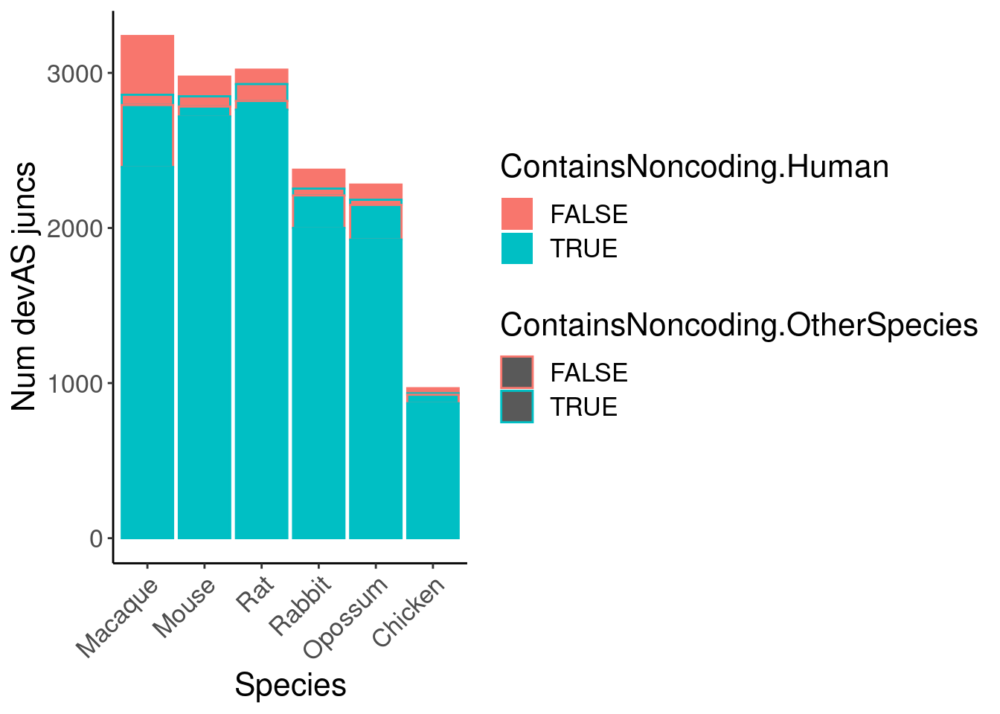
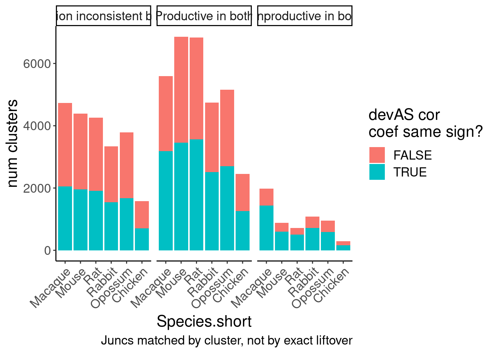

2024-08-29_ExploreJuncLiftovers
2024-08-29
Last updated: 2024-09-06
Checks: 6 1
Knit directory:
2024_comparativesplicing/analysis/
This reproducible R Markdown analysis was created with workflowr (version 1.7.0). The Checks tab describes the reproducibility checks that were applied when the results were created. The Past versions tab lists the development history.
The R Markdown is untracked by Git. To know which version of the R
Markdown file created these results, you’ll want to first commit it to
the Git repo. If you’re still working on the analysis, you can ignore
this warning. When you’re finished, you can run
wflow_publish to commit the R Markdown file and build the
HTML.
Great job! The global environment was empty. Objects defined in the global environment can affect the analysis in your R Markdown file in unknown ways. For reproduciblity it’s best to always run the code in an empty environment.
The command set.seed(19900924) was run prior to running
the code in the R Markdown file. Setting a seed ensures that any results
that rely on randomness, e.g. subsampling or permutations, are
reproducible.
Great job! Recording the operating system, R version, and package versions is critical for reproducibility.
Nice! There were no cached chunks for this analysis, so you can be confident that you successfully produced the results during this run.
Great job! Using relative paths to the files within your workflowr project makes it easier to run your code on other machines.
Great! You are using Git for version control. Tracking code development and connecting the code version to the results is critical for reproducibility.
The results in this page were generated with repository version 172f74b. See the Past versions tab to see a history of the changes made to the R Markdown and HTML files.
Note that you need to be careful to ensure that all relevant files for
the analysis have been committed to Git prior to generating the results
(you can use wflow_publish or
wflow_git_commit). workflowr only checks the R Markdown
file, but you know if there are other scripts or data files that it
depends on. Below is the status of the Git repository when the results
were generated:
Ignored files:
Ignored: .Rhistory
Ignored: .Rproj.user/
Ignored: code/.RData
Ignored: code/.Rhistory
Ignored: code/.ipynb_checkpoints/
Ignored: code/.snakemake/
Ignored: code/ChainFiles/
Ignored: code/Chicken.fixed2.agat.log
Ignored: code/Chicken.head.agat.log
Ignored: code/CordosoMoreira_Fastq/
Ignored: code/Downloads/
Ignored: code/GenomeFiles/
Ignored: code/LiftoverJuncs/
Ignored: code/Log.out
Ignored: code/MazinLeafcutterAnalysis/
Ignored: code/Reference.basic.agat.log
Ignored: code/Rplots.pdf
Ignored: code/Session.vim
Ignored: code/config/OldConfigs/2040822_Cordoso_Moreira_SampleList.tsv
Ignored: code/conservation/
Ignored: code/featureCounts/
Ignored: code/kaessmanAnalysis/
Ignored: code/kaessman_AS_dat/
Ignored: code/logs/
Ignored: code/rna-seq/
Ignored: code/rules/.MazinLeafcutterAnalysis.smk.swp
Ignored: code/scratch/
Ignored: code/scripts/.ipynb_checkpoints/
Ignored: code/scripts/.vscode/
Ignored: code/snakemake.log
Ignored: data/.DS_Store
Untracked files:
Untracked: analysis/.ipynb_checkpoints/
Untracked: analysis/2024-08-21_SpearmanFromPSI_WithinSpecies.Rmd
Untracked: analysis/2024-08-21_SpearmanFromPSI_WithinSpecies_AllSpecies.Rmd
Untracked: analysis/2024-08-21_SpearmanFromPSI_WithinSpecies_SampleStagesFixed.Rmd
Untracked: analysis/2024-08-24_BioMartLookupGenes.Rmd
Untracked: analysis/2024-08-29_ExploreJuncLiftovers.Rmd
Untracked: analysis/2024-08-29_OrganizeCrossSpeciesTables.Rmd
Untracked: analysis/2024-09-06_UnrpdoctuviveSplicingAndExpression.Rmd
Untracked: analysis/20240815_LiftoverJuncsTest.ipynb
Untracked: analysis/Untitled.ipynb
Untracked: code/envs/crossmap.yml
Untracked: code/rules/MazinLeafcutterAnalysis.smk
Untracked: code/scripts/FeatureCounts_to_Mat.R
Untracked: code/scripts/PrepAllJuncsFor_JunctionClassifier.R
Untracked: code/scripts/Reformat_gtf.py
Untracked: code/scripts/SpearmanCor_Mazin_LeafcutterPSI.R
Untracked: code/scripts/SpearmanCor_Mazin_log2RPKM.R
Untracked: code/scripts/Untitled.ipynb
Untracked: data/Stages_AsIn_CordosoMoreira.tsv
Untracked: data/Stages_AsIn_CordosoMoreira_Recoded.txt
Untracked: output/Conserved.devAS.leafcutter.tsv.gz
Untracked: output/Ensembl.GeneHumanHomologs.tsv.gz
Untracked: output/Ensembl.TranscriptInfo.tsv.gz
Unstaged changes:
Modified: analysis/2024-07-16_Download_CordosoMoreira_Fastq.Rmd
Modified: analysis/index.Rmd
Modified: code/Snakefile
Modified: code/config/ChainFiles.tsv
Modified: code/config/Cordoso_Moreira_SampleList.tsv
Modified: code/config/STAR_Genome_List.tsv
Modified: code/config/samples.tsv
Modified: code/envs/bedparse.yml
Modified: code/module_workflows/snakemake-workflow_rna-seq
Modified: code/rules/LiftoverJuncs.smk
Modified: code/rules/common.smk
Modified: code/scripts/leafcutter2
Modified: output/QC/ReadCountsPerSamples.tsv
Note that any generated files, e.g. HTML, png, CSS, etc., are not included in this status report because it is ok for generated content to have uncommitted changes.
There are no past versions. Publish this analysis with
wflow_publish() to start tracking its development.
Intro
I have tried two liftover methods for to liftover juncs to hg38: (1) AsJuncs: liftover the junc coordinates corresponding to spliced segment as single feature, or (2) AsFlanks: liftover the flanking 1bp nucleotides as a blocked bed file as input for crossmap. Let’s compare.
library(tidyverse)
library(data.table)
# Set theme
theme_set(
theme_classic() +
theme(text=element_text(size=16, family="Helvetica")))
# I use layer a lot, to rotate long x-axis labels
Rotate_x_labels <- theme(axis.text.x = element_text(angle = 45, vjust = 1, hjust=1))Read in data
Liftovers.AsJuncs <- Sys.glob("../code/LiftoverJuncs/AsJuncs/*.Lifted.bed.gz") %>%
str_subset("Rabbit", negate=T) %>%
setNames(str_replace(., "../code/LiftoverJuncs/AsJuncs/(.+?).Lifted.bed.gz", "\\1")) %>%
lapply(fread, col.names=c("chrom", "start", "stop", "name", "score", "strand")) %>%
bind_rows(.id = "OriginGenome")
Liftovers.AsJuncs %>%Wow, based just on file size, I can already say that the AsJuncs approach is not right… way too many hits (multiple liftover hits).
Liftovers.AsFlanks <- Sys.glob("../code/LiftoverJuncs/AsFlanks/*.Lifted.bed.gz") %>%
# str_subset("Rat", negate=T) %>%
setNames(str_replace(., "../code/LiftoverJuncs/AsFlanks/(.+?).Lifted.bed.gz", "\\1")) %>%
lapply(fread, col.names=c("chrom", "start", "end", "name", "score", "strand", "thickStart", "thickStop", "color", "nBlocks", "blockSizes", "blockStarts")) %>%
bind_rows(.id = "OriginGenome")
Liftovers.AsFlanks %>%
distinct(OriginGenome) OriginGenome
1: Chicken_UCSC.galGal6_ensv101
2: Macaque_UCSC.rheMac10_ensv101
3: Mouse_UCSC.mm39_GencodeComprehensive46
4: Opossum_UCSC.monDom5_ensvUnknown
5: Rabbit_UCSC.oryCun2_ensv101
6: Rat_UCSC.rn7_RefSeqv108HumanJuncs <- read_tsv("../code/rna-seq/SplicingAnalysis/ObservedJuncsAnnotations/Human_UCSC.hg38_GencodeComprehensive46.uniq.annotated.tsv.gz")
Joined <- Liftovers.AsFlanks %>%
# filter(OriginGenome == "Macaque_UCSC.rheMac10_ensv101") %>%
mutate(start = start +1, end=end) %>%
inner_join(
HumanJuncs, by=c("chrom", "start", "end", "strand"), suffix=c(".other",".human")
) %>%
mutate(OriginGenome = factor(OriginGenome, levels=c("Macaque_UCSC.rheMac10_ensv101", "Mouse_UCSC.mm39_GencodeComprehensive46", "Rat_UCSC.rn7_RefSeqv108", "Rabbit_UCSC.oryCun2_ensv101", "Opossum_UCSC.monDom5_ensvUnknown", "Chicken_UCSC.galGal6_ensv101")))
Joined %>%
count(OriginGenome) %>%
ggplot(aes(x=OriginGenome, y=n)) +
geom_col() +
coord_cartesian(ylim=c(50E3, 400E3)) +
Rotate_x_labelsNow let’s check how things map back to human, and verify they mostly map to same place…
#todoNow let’s add back junction productivity
First let’s explore the junction productivity. I did it two ways: with just the clustered juncs, or with all observed juncs (no minimum read count)…
JunctionProductivity.OnlyClustered <- JuncAnnotations <- Sys.glob("../code/MazinLeafcutterAnalysis/ClassifyJuncs/*.Clustered._junction_classifications.txt") %>%
setNames(str_replace(., "../code/MazinLeafcutterAnalysis/ClassifyJuncs/(.+?).Clustered._junction_classifications.txt", "\\1")) %>%
lapply(fread) %>%
bind_rows(.id="Species") %>%
mutate(Species.short = str_replace(Species, "^(.+?)_.+", "\\1"))
JunctionProductivity <- JuncAnnotations <- Sys.glob("../code/MazinLeafcutterAnalysis/ClassifyJuncs/*.AllObserved._junction_classifications.txt") %>%
setNames(str_replace(., "../code/MazinLeafcutterAnalysis/ClassifyJuncs/(.+?).AllObserved._junction_classifications.txt", "\\1")) %>%
lapply(fread) %>%
bind_rows(.id="Species") %>%
mutate(Species.short = str_replace(Species, "^(.+?)_.+", "\\1"))
# Do the Coding status match for the two methods?
Classification.Counts.TwoMethods <- JunctionProductivity.OnlyClustered %>%
inner_join(JunctionProductivity,
by=c("Species", "Gene_name", "Intron_coord", "Species.short"), suffix=c(".OnlyClustered", ".AllObserved")) %>%
count(Coding.OnlyClustered, Coding.AllObserved)
Classification.Counts.TwoMethods Coding.OnlyClustered Coding.AllObserved n
1: FALSE FALSE 654460
2: FALSE TRUE 79392
3: TRUE TRUE 1832016Classification.Counts.TwoMethods %>%
mutate(ClusteredCoding_AllObseredCoding = paste(Coding.OnlyClustered, Coding.AllObserved)) %>%
ggplot(aes(x=1, y=n, fill=ClusteredCoding_AllObseredCoding)) +
geom_col(position='fill')79392/(654460+79392)[1] 0.1081853So about 10% of juncs that are classified as non-coding when you only use the leafcutter clustered junctions become coding if you consider all observed junctions. That isn’t big enough for me to worry much about which set of classifications I use.
Now let’s check the total number of productive/unproductive (using the All observed method for classifying junctions)
JunctionProductivity %>% distinct(Species.short) Species.short
1: Chicken
2: Human
3: Macaque
4: Mouse
5: Opossum
6: Rabbit
7: RatJunctionProductivity %>%
count(Species.short, Annot, Coding) %>%
mutate(Annot = if_else(Annot, "Annot", "Unannot")) %>%
mutate(Coding = if_else(Coding, "Productive", "Unproductive")) %>%
mutate(Group = paste(Coding, Annot)) %>%
mutate(Species = recode(Species.short, "Human"="Human, Gencode v46", "Macaque"="Macaque, Ensembl v101", "Mouse"="Mouse, Gencode v46", "Rat"="Rat, RefSeq updated 2021-03-31","Rabbit"="Rabbit, Ensembl v101", "Opossum"="Opossum, Ensembl v97", "Chicken"="Chicken, Ensembl v101")) %>%
mutate(Species = factor(Species, levels=c("Human"="Human, Gencode v46", "Macaque"="Macaque, Ensembl v101", "Mouse"="Mouse, Gencode v46", "Rat"="Rat, RefSeq updated 2021-03-31","Rabbit"="Rabbit, Ensembl v101", "Opossum"="Opossum, Ensembl v97", "Chicken"="Chicken, Ensembl v101"))) %>%
ggplot(aes(x=Species, y=n, fill=Group)) +
geom_col(position='stack') +
scale_fill_manual(values = c("Productive Annot"="#1f78b4", "Productive Unannot"="#a6cee3", "Unproductive Annot"="#e31a1c", "Unproductive Unannot"="#fb9a99")) +
Rotate_x_labels +
labs(y="Number unique juncs", caption=str_wrap("GTF for most recent assembly on UCSC, which itself sources gene models from x-axis labels. All observed juncs", 30), x="Species, gene model source")JunctionProductivity %>%
count(Species.short, Annot, Coding) %>%
mutate(Annot = if_else(Annot, "Annot", "Unannot")) %>%
mutate(Coding = if_else(Coding, "Productive", "Unproductive")) %>%
mutate(Group = paste(Coding, Annot)) %>%
mutate(Species = recode(Species.short, "Human"="Human, Gencode v46", "Macaque"="Macaque, Ensembl v101", "Mouse"="Mouse, Gencode v46", "Rat"="Rat, RefSeq updated 2021-03-31","Rabbit"="Rabbit, Ensembl v101", "Opossum"="Opossum, Ensembl v97", "Chicken"="Chicken, Ensembl v101")) %>%
mutate(Species = factor(Species, levels=c("Human"="Human, Gencode v46", "Macaque"="Macaque, Ensembl v101", "Mouse"="Mouse, Gencode v46", "Rat"="Rat, RefSeq updated 2021-03-31","Rabbit"="Rabbit, Ensembl v101", "Opossum"="Opossum, Ensembl v97", "Chicken"="Chicken, Ensembl v101"))) %>%
ggplot(aes(x=Species, y=n, fill=Group)) +
geom_col(position='fill') +
scale_fill_manual(values = c("Productive Annot"="#1f78b4", "Productive Unannot"="#a6cee3", "Unproductive Annot"="#e31a1c", "Unproductive Unannot"="#fb9a99")) +
Rotate_x_labels +
labs(y="fraction unique juncs", caption=str_wrap("GTF for most recent assembly on UCSC, which itself sources gene models from x-axis labels. All observed juncs", 30), x="Species, gene model source")JunctionProductivity.OnlyClustered %>%
count(Species.short, Annot, Coding) %>%
mutate(Annot = if_else(Annot, "Annot", "Unannot")) %>%
mutate(Coding = if_else(Coding, "Productive", "Unproductive")) %>%
mutate(Group = paste(Coding, Annot)) %>%
mutate(Species = recode(Species.short, "Human"="Human, Gencode v46", "Macaque"="Macaque, Ensembl v101", "Mouse"="Mouse, Gencode v46", "Rat"="Rat, RefSeq updated 2021-03-31","Rabbit"="Rabbit, Ensembl v101", "Opossum"="Opossum, Ensembl v97", "Chicken"="Chicken, Ensembl v101")) %>%
mutate(Species = factor(Species, levels=c("Human"="Human, Gencode v46", "Macaque"="Macaque, Ensembl v101", "Mouse"="Mouse, Gencode v46", "Rat"="Rat, RefSeq updated 2021-03-31","Rabbit"="Rabbit, Ensembl v101", "Opossum"="Opossum, Ensembl v97", "Chicken"="Chicken, Ensembl v101"))) %>%
ggplot(aes(x=Species, y=n, fill=Group)) +
geom_col(position='stack') +
scale_fill_manual(values = c("Productive Annot"="#1f78b4", "Productive Unannot"="#a6cee3", "Unproductive Annot"="#e31a1c", "Unproductive Unannot"="#fb9a99")) +
Rotate_x_labels +
labs(y="Number unique juncs", caption=str_wrap("GTF for most recent assembly on UCSC, which itself sources gene models from x-axis labels. Clustered juncs", 30), x="Species, gene model source")Now let’s just consider the juncs that lifted over…
Joined.WithProductivityStatus <- Joined %>%
# head(10000) %>%
mutate(Intron_coord = str_replace(name.other, "(^.+)_([0-9]+?)_([0-9]+?)_[+-]$", "\\1:\\2-\\3")) %>%
inner_join(JunctionProductivity, by=c("OriginGenome"="Species", "Intron_coord"))
# JunctionProductivity
Joined.WithProductivityStatus %>%
mutate(Annot = if_else(Annot, "Annot", "Unannot")) %>%
mutate(Coding = if_else(Coding, "Productive", "Unproductive")) %>%
mutate(Group = paste(Coding, Annot)) %>%
count(Species.short, Group) %>%
mutate(Species = recode(Species.short, "Human"="Human, Gencode v46", "Macaque"="Macaque, Ensembl v101", "Mouse"="Mouse, Gencode v46", "Rat"="Rat, RefSeq updated 2021-03-31","Rabbit"="Rabbit, Ensembl v101", "Opossum"="Opossum, Ensembl v97", "Chicken"="Chicken, Ensembl v101")) %>%
mutate(Species = factor(Species, levels=c("Human"="Human, Gencode v46", "Macaque"="Macaque, Ensembl v101", "Mouse"="Mouse, Gencode v46", "Rat"="Rat, RefSeq updated 2021-03-31","Rabbit"="Rabbit, Ensembl v101", "Opossum"="Opossum, Ensembl v97", "Chicken"="Chicken, Ensembl v101"))) %>%
ggplot(aes(x=Species, y=n, fill=Group)) +
geom_col(position='stack') +
scale_fill_manual(values = c("Productive Annot"="#1f78b4", "Productive Unannot"="#a6cee3", "Unproductive Annot"="#e31a1c", "Unproductive Unannot"="#fb9a99")) +
Rotate_x_labelsOk something weird is happening… Let’s check how many are human annotated juncs from regtools
Joined %>%
mutate(known_junction = factor(known_junction)) %>%
count(OriginGenome, known_junction) %>%
ggplot(aes(x=OriginGenome, y=n, fill=known_junction)) +
geom_col(position='stack') +
coord_cartesian(ylim=c(50E3, 400E3)) +
Rotate_x_labelsJunctionProductivity %>%
distinct(Species) Species
1: Chicken_UCSC.galGal6_ensv101
2: Human_UCSC.hg38_GencodeComprehensive46
3: Macaque_UCSC.rheMac10_ensv101
4: Mouse_UCSC.mm39_GencodeComprehensive46
5: Opossum_UCSC.monDom5_ensvUnknown
6: Rabbit_UCSC.oryCun2_ensv101
7: Rat_UCSC.rn7_RefSeqv108HumanJuncs %>%
mutate(Intron_coord = str_replace(name, "(^.+)_([0-9]+?)_([0-9]+?)_[+-]$", "\\1:\\2-\\3")) %>%
inner_join(
JunctionProductivity %>%
filter(Species == "Human_UCSC.hg38_GencodeComprehensive46")
) %>%
count(Annot)# A tibble: 2 × 2
Annot n
<lgl> <int>
1 FALSE 1466054
2 TRUE 10Ok, I think there mayb be some bug somewhere… regtools says they are mostly known juncs, yet when I join with the productivity status, almost all the succesful joins are labelled as unannotated. I suspect there is a bug that messes up coordinates only for Annot juncs. Let’s manually check some juncs in IGV for GT-AG splice sites.
JunctionProductivity %>%
filter(Species == "Human_UCSC.hg38_GencodeComprehensive46") %>%
sample_n(100) Species Gene_name
1: Human_UCSC.hg38_GencodeComprehensive46 ENSG00000153317.15
2: Human_UCSC.hg38_GencodeComprehensive46 ENSG00000127603.32
3: Human_UCSC.hg38_GencodeComprehensive46 ENSG00000108001.16
4: Human_UCSC.hg38_GencodeComprehensive46 ENSG00000132122.12
5: Human_UCSC.hg38_GencodeComprehensive46 ENSG00000221955.11
6: Human_UCSC.hg38_GencodeComprehensive46 ENSG00000182963.11
7: Human_UCSC.hg38_GencodeComprehensive46 ENSG00000072849.11
8: Human_UCSC.hg38_GencodeComprehensive46 ENSG00000140153.18
9: Human_UCSC.hg38_GencodeComprehensive46 ENSG00000179950.15
10: Human_UCSC.hg38_GencodeComprehensive46 ENSG00000120949.15
11: Human_UCSC.hg38_GencodeComprehensive46 ENSG00000057935.14
12: Human_UCSC.hg38_GencodeComprehensive46 ENSG00000112146.17
13: Human_UCSC.hg38_GencodeComprehensive46 ENSG00000112280.18
14: Human_UCSC.hg38_GencodeComprehensive46 ENSG00000188191.16
15: Human_UCSC.hg38_GencodeComprehensive46 ENSG00000109685.19
16: Human_UCSC.hg38_GencodeComprehensive46 ENSG00000198822.11
17: Human_UCSC.hg38_GencodeComprehensive46 ENSG00000159842.16
18: Human_UCSC.hg38_GencodeComprehensive46 ENSG00000011132.12
19: Human_UCSC.hg38_GencodeComprehensive46 ENSG00000084234.18
20: Human_UCSC.hg38_GencodeComprehensive46 ENSG00000116539.14
21: Human_UCSC.hg38_GencodeComprehensive46 ENSG00000213920.9
22: Human_UCSC.hg38_GencodeComprehensive46 ENSG00000166278.16
23: Human_UCSC.hg38_GencodeComprehensive46 ENSG00000182450.14
24: Human_UCSC.hg38_GencodeComprehensive46 ENSG00000100316.16
25: Human_UCSC.hg38_GencodeComprehensive46 ENSG00000197102.14
26: Human_UCSC.hg38_GencodeComprehensive46 ENSG00000152818.20
27: Human_UCSC.hg38_GencodeComprehensive46 ENSG00000154710.18
28: Human_UCSC.hg38_GencodeComprehensive46 ENSG00000162300.13
29: Human_UCSC.hg38_GencodeComprehensive46 ENSG00000204001.10
30: Human_UCSC.hg38_GencodeComprehensive46 ENSG00000244462.8
31: Human_UCSC.hg38_GencodeComprehensive46 ENSG00000156206.14
32: Human_UCSC.hg38_GencodeComprehensive46 ENSG00000007047.16
33: Human_UCSC.hg38_GencodeComprehensive46 ENSG00000196427.14
34: Human_UCSC.hg38_GencodeComprehensive46 ENSG00000142910.16
35: Human_UCSC.hg38_GencodeComprehensive46 ENSG00000130226.18
36: Human_UCSC.hg38_GencodeComprehensive46 ENSG00000188732.11
37: Human_UCSC.hg38_GencodeComprehensive46 ENSG00000185774.17
38: Human_UCSC.hg38_GencodeComprehensive46 ENSG00000107890.17
39: Human_UCSC.hg38_GencodeComprehensive46 ENSG00000187514.17
40: Human_UCSC.hg38_GencodeComprehensive46 ENSG00000066084.13
41: Human_UCSC.hg38_GencodeComprehensive46 ENSG00000132600.18
42: Human_UCSC.hg38_GencodeComprehensive46 ENSG00000065357.20
43: Human_UCSC.hg38_GencodeComprehensive46 ENSG00000163468.15
44: Human_UCSC.hg38_GencodeComprehensive46 ENSG00000130475.16
45: Human_UCSC.hg38_GencodeComprehensive46 ENSG00000283496.1
46: Human_UCSC.hg38_GencodeComprehensive46 ENSG00000075891.24
47: Human_UCSC.hg38_GencodeComprehensive46 ENSG00000172661.20
48: Human_UCSC.hg38_GencodeComprehensive46 ENSG00000008735.14
49: Human_UCSC.hg38_GencodeComprehensive46 ENSG00000284931.1
50: Human_UCSC.hg38_GencodeComprehensive46 ENSG00000116688.18
51: Human_UCSC.hg38_GencodeComprehensive46 ENSG00000136237.20
52: Human_UCSC.hg38_GencodeComprehensive46 ENSG00000145860.13
53: Human_UCSC.hg38_GencodeComprehensive46 ENSG00000136560.14
54: Human_UCSC.hg38_GencodeComprehensive46 ENSG00000126890.14
55: Human_UCSC.hg38_GencodeComprehensive46 ENSG00000122882.11
56: Human_UCSC.hg38_GencodeComprehensive46 ENSG00000011485.15
57: Human_UCSC.hg38_GencodeComprehensive46 ENSG00000230561.7
58: Human_UCSC.hg38_GencodeComprehensive46 ENSG00000015592.17
59: Human_UCSC.hg38_GencodeComprehensive46 ENSG00000138002.16
60: Human_UCSC.hg38_GencodeComprehensive46 ENSG00000130167.14
61: Human_UCSC.hg38_GencodeComprehensive46 ENSG00000038382.23
62: Human_UCSC.hg38_GencodeComprehensive46 ENSG00000269035.1
63: Human_UCSC.hg38_GencodeComprehensive46 ENSG00000115548.17
64: Human_UCSC.hg38_GencodeComprehensive46 ENSG00000244474.6
65: Human_UCSC.hg38_GencodeComprehensive46 ENSG00000240303.8
66: Human_UCSC.hg38_GencodeComprehensive46 ENSG00000170464.10
67: Human_UCSC.hg38_GencodeComprehensive46 ENSG00000077157.23
68: Human_UCSC.hg38_GencodeComprehensive46 ENSG00000100292.18
69: Human_UCSC.hg38_GencodeComprehensive46 ENSG00000111596.14
70: Human_UCSC.hg38_GencodeComprehensive46 ENSG00000126217.22
71: Human_UCSC.hg38_GencodeComprehensive46 ENSG00000196517.13
72: Human_UCSC.hg38_GencodeComprehensive46 ENSG00000165046.13
73: Human_UCSC.hg38_GencodeComprehensive46 ENSG00000136950.13
74: Human_UCSC.hg38_GencodeComprehensive46 ENSG00000101333.19
75: Human_UCSC.hg38_GencodeComprehensive46 ENSG00000183597.16
76: Human_UCSC.hg38_GencodeComprehensive46 ENSG00000104938.18
77: Human_UCSC.hg38_GencodeComprehensive46 ENSG00000030110.14
78: Human_UCSC.hg38_GencodeComprehensive46 ENSG00000256591.5
79: Human_UCSC.hg38_GencodeComprehensive46 ENSG00000105723.13
80: Human_UCSC.hg38_GencodeComprehensive46 ENSG00000087274.19
81: Human_UCSC.hg38_GencodeComprehensive46 ENSG00000101745.17
82: Human_UCSC.hg38_GencodeComprehensive46 ENSG00000156599.11
83: Human_UCSC.hg38_GencodeComprehensive46 ENSG00000175221.16
84: Human_UCSC.hg38_GencodeComprehensive46 ENSG00000123106.11
85: Human_UCSC.hg38_GencodeComprehensive46 ENSG00000185404.17
86: Human_UCSC.hg38_GencodeComprehensive46 ENSG00000196586.17
87: Human_UCSC.hg38_GencodeComprehensive46 ENSG00000089009.16
88: Human_UCSC.hg38_GencodeComprehensive46 ENSG00000187122.17
89: Human_UCSC.hg38_GencodeComprehensive46 ENSG00000197324.9
90: Human_UCSC.hg38_GencodeComprehensive46 ENSG00000177565.19
91: Human_UCSC.hg38_GencodeComprehensive46 ENSG00000159842.16
92: Human_UCSC.hg38_GencodeComprehensive46 ENSG00000132938.22
93: Human_UCSC.hg38_GencodeComprehensive46 ENSG00000133121.21
94: Human_UCSC.hg38_GencodeComprehensive46 ENSG00000165215.6
95: Human_UCSC.hg38_GencodeComprehensive46 ENSG00000266074.11
96: Human_UCSC.hg38_GencodeComprehensive46 ENSG00000107679.15
97: Human_UCSC.hg38_GencodeComprehensive46 ENSG00000173848.19
98: Human_UCSC.hg38_GencodeComprehensive46 ENSG00000111737.12
99: Human_UCSC.hg38_GencodeComprehensive46 ENSG00000115539.14
100: Human_UCSC.hg38_GencodeComprehensive46 ENSG00000122741.16
Species Gene_name
Intron_coord Annot Coding UTR Species.short
1: chr8:130054805-130057957 FALSE TRUE FALSE Human
2: chr1:39231243-39232807 FALSE FALSE FALSE Human
3: chr10:129843202-129867140 FALSE FALSE FALSE Human
4: chr1:48373727-48385308 FALSE FALSE FALSE Human
5: chr3:125192692-125211298 FALSE FALSE TRUE Human
6: chr17:44816992-44827714 FALSE FALSE FALSE Human
7: chr17:5480144-5486068 FALSE TRUE FALSE Human
8: chr14:102197847-102214887 FALSE FALSE FALSE Human
9: chr8:143829880-143830661 FALSE FALSE TRUE Human
10: chr1:12135613-12142286 FALSE TRUE FALSE Human
11: chr2:42697834-42698415 TRUE FALSE FALSE Human
12: chr6:53065792-53066117 FALSE TRUE FALSE Human
13: chr6:70234593-70239253 FALSE FALSE FALSE Human
14: chr7:567406-567430 FALSE FALSE FALSE Human
15: chr4:1975004-1975294 TRUE TRUE FALSE Human
16: chr7:86787116-86811416 FALSE FALSE FALSE Human
17: chr17:1125367-1181105 FALSE FALSE TRUE Human
18: chr19:3754340-3757842 FALSE FALSE FALSE Human
19: chr11:130141572-130141919 TRUE TRUE FALSE Human
20: chr1:155363402-155387132 FALSE FALSE FALSE Human
21: chr14:24215797-24217182 FALSE FALSE FALSE Human
22: chr6:31943993-31944135 TRUE TRUE FALSE Human
23: chr11:64291566-64292942 TRUE TRUE FALSE Human
24: chr22:39296247-39599541 FALSE FALSE FALSE Human
25: chr14:102048669-102048914 TRUE FALSE FALSE Human
26: chr6:144793991-144797823 FALSE FALSE TRUE Human
27: chr7:66755079-66797086 FALSE FALSE FALSE Human
28: chr11:65084782-65085115 TRUE TRUE FALSE Human
29: chr9:136715744-136802021 FALSE FALSE FALSE Human
30: chr20:35659014-35672754 FALSE FALSE TRUE Human
31: chr15:81143820-81178866 FALSE FALSE FALSE Human
32: chr19:45278662-45282775 FALSE FALSE FALSE Human
33: chr1:108239906-108240950 TRUE TRUE FALSE Human
34: chr1:31578630-31578800 FALSE FALSE FALSE Human
35: chr7:154708983-154711338 FALSE FALSE FALSE Human
36: chr7:23696736-23697752 FALSE FALSE FALSE Human
37: chr4:21521841-21539853 FALSE FALSE FALSE Human
38: chr10:27009879-27012881 FALSE FALSE FALSE Human
39: chr2:231712516-231712789 FALSE FALSE TRUE Human
40: chr12:50548668-50590512 FALSE FALSE FALSE Human
41: chr16:68349704-68352247 FALSE TRUE FALSE Human
42: chr12:55950117-55977117 FALSE FALSE FALSE Human
43: chr1:156337240-156337676 FALSE FALSE FALSE Human
44: chr19:17772741-17773932 TRUE FALSE FALSE Human
45: chr10:133334126-133334516 FALSE FALSE FALSE Human
46: chr10:100781365-100785212 FALSE TRUE FALSE Human
47: chr10:45765298-45765678 FALSE FALSE FALSE Human
48: chr22:50603719-50603973 FALSE TRUE FALSE Human
49: chr11:5253342-5254292 FALSE TRUE FALSE Human
50: chr1:11982590-11989208 FALSE FALSE TRUE Human
51: chr7:22267012-22291174 FALSE TRUE FALSE Human
52: chr5:159159035-159161266 TRUE TRUE FALSE Human
53: chr2:161161412-161179614 TRUE TRUE FALSE Human
54: chrX:154652267-154652497 TRUE TRUE FALSE Human
55: chr10:73163950-73182959 FALSE FALSE TRUE Human
56: chr19:46390132-46392636 FALSE FALSE FALSE Human
57: chr5:127798162-127849306 FALSE FALSE FALSE Human
58: chr8:27241757-27242397 TRUE TRUE FALSE Human
59: chr2:27453792-27453981 FALSE TRUE FALSE Human
60: chr19:11297639-11329824 FALSE FALSE FALSE Human
61: chr5:14293134-14297072 TRUE TRUE FALSE Human
62: chr19:17459666-17632293 FALSE FALSE FALSE Human
63: chr2:86451213-86455085 TRUE TRUE FALSE Human
64: chr2:233743207-233754562 FALSE FALSE FALSE Human
65: chr3:132559056-132559832 FALSE FALSE FALSE Human
66: chr5:139428683-139439406 TRUE TRUE FALSE Human
67: chr1:202569197-202604539 FALSE FALSE FALSE Human
68: chr22:35381458-35383105 FALSE FALSE FALSE Human
69: chr12:70278274-70310895 TRUE TRUE FALSE Human
70: chr13:113096483-113098003 FALSE FALSE TRUE Human
71: chr1:44001627-44002313 TRUE TRUE FALSE Human
72: chr8:38393118-38400271 FALSE FALSE FALSE Human
73: chr9:124869845-124873315 FALSE FALSE FALSE Human
74: chr20:9337206-9362895 FALSE FALSE TRUE Human
75: chr22:20061683-20063338 TRUE TRUE FALSE Human
76: chr19:7765268-7765638 TRUE TRUE FALSE Human
77: chr6:33577635-33579809 FALSE FALSE TRUE Human
78: chr11:61467204-61472744 FALSE FALSE FALSE Human
79: chr19:42240142-42242315 FALSE TRUE FALSE Human
80: chr4:2875983-2884514 FALSE FALSE TRUE Human
81: chr18:9216900-9219272 FALSE FALSE FALSE Human
82: chr11:57700397-57737607 FALSE FALSE FALSE Human
83: chr19:886385-889637 FALSE FALSE FALSE Human
84: chr12:28549130-28573240 TRUE TRUE FALSE Human
85: chr2:230328831-230370907 FALSE TRUE FALSE Human
86: chr6:75892690-75894801 FALSE FALSE FALSE Human
87: chr12:112406913-112408239 FALSE TRUE FALSE Human
88: chr10:97082666-97085155 FALSE FALSE FALSE Human
89: chr14:22873446-22875055 TRUE TRUE FALSE Human
90: chr3:177193392-177215055 FALSE FALSE FALSE Human
91: chr17:1062830-1062874 FALSE FALSE FALSE Human
92: chr13:29429051-29439982 FALSE FALSE FALSE Human
93: chr13:33349216-33349832 FALSE FALSE FALSE Human
94: chr7:73751415-73776138 FALSE FALSE FALSE Human
95: chr17:81426979-81441830 FALSE FALSE FALSE Human
96: chr10:122375665-122392302 FALSE FALSE TRUE Human
97: chr10:5453346-5453501 FALSE FALSE FALSE Human
98: chr12:120095087-120096468 FALSE FALSE TRUE Human
99: chr2:100563509-100564392 FALSE FALSE FALSE Human
100: chr9:37800647-37819287 FALSE TRUE FALSE Human
Intron_coord Annot Coding UTR Species.shortOk I can confirm there is an error there… Intron_coord column for Annotated juncs is off by one at end. For now let’s fix it, here. And fix it later in the script. After chatting with Chao and Quinn, they are aware of this bug have have fixed it in their repo. I won’t bother trying to fix the script.
JunctionProductivity.fixed <- JunctionProductivity %>%
# head() %>%
separate(Intron_coord, into=c("chrom", "start", "stop"), sep='[-:]', convert=T) %>%
mutate(Intron_coord = case_when(
Annot ~ str_glue("{chrom}:{start}-{stop-1}"),
TRUE ~ str_glue("{chrom}:{start}-{stop}")
)) %>%
dplyr::select(-chrom, -start, -stop)
Joined.WithProductivityStatus <- Joined %>%
# head(10000) %>%
mutate(Intron_coord = str_replace(name.other, "(^.+)_([0-9]+?)_([0-9]+?)_[+-]$", "\\1:\\2-\\3")) %>%
inner_join(JunctionProductivity.fixed, by=c("OriginGenome"="Species", "Intron_coord"))
Joined.WithProductivityStatus %>%
mutate(Annot = if_else(Annot, "Annot", "Unannot")) %>%
mutate(Coding = if_else(Coding, "Productive", "Unproductive")) %>%
mutate(Group = paste(Coding, Annot)) %>%
count(Species.short, Group) %>%
mutate(Species = recode(Species.short, "Human"="Human, Gencode v46", "Macaque"="Macaque, Ensembl v101", "Mouse"="Mouse, Gencode v46", "Rat"="Rat, RefSeq updated 2021-03-31","Rabbit"="Rabbit, Ensembl v101", "Opossum"="Opossum, Ensembl v97", "Chicken"="Chicken, Ensembl v101")) %>%
mutate(Species = factor(Species, levels=c("Human"="Human, Gencode v46", "Macaque"="Macaque, Ensembl v101", "Mouse"="Mouse, Gencode v46", "Rat"="Rat, RefSeq updated 2021-03-31","Rabbit"="Rabbit, Ensembl v101", "Opossum"="Opossum, Ensembl v97", "Chicken"="Chicken, Ensembl v101"))) %>%
ggplot(aes(x=Species, y=n, fill=Group)) +
geom_col(position='stack') +
scale_fill_manual(values = c("Productive Annot"="#1f78b4", "Productive Unannot"="#a6cee3", "Unproductive Annot"="#e31a1c", "Unproductive Unannot"="#fb9a99")) +
Rotate_x_labels +
labs(y="Number lifted juncs\nwith human match", x="Species, Annotation source for ClassifyJuncs", fill="ClassifyJuncs")Same, but now facet based on total junction counts across all samples
Joined.WithProductivityStatus %>%
mutate(Annot = if_else(Annot, "Annot", "Unannot")) %>%
mutate(Coding = if_else(Coding, "Productive", "Unproductive")) %>%
mutate(Group = paste(Coding, Annot)) %>%
mutate(JunctionCountGroup = cut(score.other, breaks=c(0, 10, 100, 1000, Inf))) %>%
# distinct(JunctionCountGroup)
count(Species.short, Group, JunctionCountGroup) %>%
mutate(Species = recode(Species.short, "Human"="Human, Gencode v46", "Macaque"="Macaque, Ensembl v101", "Mouse"="Mouse, Gencode v46", "Rat"="Rat, RefSeq updated 2021-03-31","Rabbit"="Rabbit, Ensembl v101", "Opossum"="Opossum, Ensembl v97", "Chicken"="Chicken, Ensembl v101")) %>%
mutate(Species = factor(Species, levels=c("Human"="Human, Gencode v46", "Macaque"="Macaque, Ensembl v101", "Mouse"="Mouse, Gencode v46", "Rat"="Rat, RefSeq updated 2021-03-31","Rabbit"="Rabbit, Ensembl v101", "Opossum"="Opossum, Ensembl v97", "Chicken"="Chicken, Ensembl v101"))) %>%
ggplot(aes(x=Species, y=n, fill=Group)) +
geom_col(position='stack') +
facet_wrap(~JunctionCountGroup, scales="free") +
scale_fill_manual(values = c("Productive Annot"="#1f78b4", "Productive Unannot"="#a6cee3", "Unproductive Annot"="#e31a1c", "Unproductive Unannot"="#fb9a99")) +
Rotate_x_labels +
labs(y="Number lifted juncs\nwith human match", x="Species, Annotation source for ClassifyJuncs", fill="ClassifyJuncs")Another version of this based on PSI (perhaps max PSI, with minimum of X counts) instead of junc counts would be useful.
Ok, now’s lets subset just the juncs that have significant spearman test in any tissue within the species.
Spearman.tests <- Sys.glob("../code/MazinLeafcutterAnalysis/SplicingSpearmanCoefs/*.tsv.gz") %>%
setNames(str_replace(., "../code/MazinLeafcutterAnalysis/SplicingSpearmanCoefs/(.+?).tsv.gz", "\\1")) %>%
lapply(fread) %>%
bind_rows(.id="OriginGenome") %>%
dplyr::rename(chrom=start, start=stop, stop=chrom) %>%
mutate(Intron_coord = str_glue("{chrom}:{start}-{stop}"))
Spearman.tests.WithProductivity <- Spearman.tests %>%
inner_join(
JunctionProductivity.fixed,
by=c("OriginGenome"="Species", "Intron_coord")
)
Spearman.tests.WithProductivity %>%
count(OriginGenome, Coding, Annot) OriginGenome Coding Annot n
1: Chicken_UCSC.galGal6_ensv101 FALSE FALSE 221526
2: Chicken_UCSC.galGal6_ensv101 TRUE FALSE 111816
3: Chicken_UCSC.galGal6_ensv101 TRUE TRUE 7
4: Human_UCSC.hg38_GencodeComprehensive46 FALSE FALSE 238301
5: Human_UCSC.hg38_GencodeComprehensive46 FALSE TRUE 9
6: Human_UCSC.hg38_GencodeComprehensive46 TRUE FALSE 105779
7: Human_UCSC.hg38_GencodeComprehensive46 TRUE TRUE 7
8: Macaque_UCSC.rheMac10_ensv101 FALSE FALSE 241961
9: Macaque_UCSC.rheMac10_ensv101 TRUE FALSE 152182
10: Macaque_UCSC.rheMac10_ensv101 TRUE TRUE 3
11: Mouse_UCSC.mm39_GencodeComprehensive46 FALSE FALSE 194521
12: Mouse_UCSC.mm39_GencodeComprehensive46 FALSE TRUE 51
13: Mouse_UCSC.mm39_GencodeComprehensive46 TRUE FALSE 97098
14: Mouse_UCSC.mm39_GencodeComprehensive46 TRUE TRUE 35
15: Opossum_UCSC.monDom5_ensvUnknown FALSE FALSE 253192
16: Opossum_UCSC.monDom5_ensvUnknown TRUE FALSE 113259
17: Rabbit_UCSC.oryCun2_ensv101 FALSE FALSE 308492
18: Rabbit_UCSC.oryCun2_ensv101 TRUE FALSE 204169
19: Rabbit_UCSC.oryCun2_ensv101 TRUE TRUE 17
20: Rat_UCSC.rn7_RefSeqv108 FALSE FALSE 224292
21: Rat_UCSC.rn7_RefSeqv108 FALSE TRUE 6
22: Rat_UCSC.rn7_RefSeqv108 TRUE FALSE 107105
23: Rat_UCSC.rn7_RefSeqv108 TRUE TRUE 7
OriginGenome Coding Annot nblah. this bug again. I don’t know how this is happening exactly, but I will just fix it to make sure I reasonably capture all juncs
Spearman.tests.WithProductivity <- Spearman.tests %>%
inner_join(
JunctionProductivity,
by=c("OriginGenome"="Species", "Intron_coord")
)
Spearman.tests.WithProductivity %>%
count(OriginGenome, Coding, Annot) OriginGenome Coding Annot n
1: Chicken_UCSC.galGal6_ensv101 FALSE FALSE 221526
2: Chicken_UCSC.galGal6_ensv101 TRUE FALSE 111816
3: Chicken_UCSC.galGal6_ensv101 TRUE TRUE 331680
4: Human_UCSC.hg38_GencodeComprehensive46 FALSE FALSE 238301
5: Human_UCSC.hg38_GencodeComprehensive46 FALSE TRUE 96426
6: Human_UCSC.hg38_GencodeComprehensive46 TRUE FALSE 105779
7: Human_UCSC.hg38_GencodeComprehensive46 TRUE TRUE 813207
8: Macaque_UCSC.rheMac10_ensv101 FALSE FALSE 241961
9: Macaque_UCSC.rheMac10_ensv101 TRUE FALSE 152182
10: Macaque_UCSC.rheMac10_ensv101 TRUE TRUE 372135
11: Mouse_UCSC.mm39_GencodeComprehensive46 FALSE FALSE 194521
12: Mouse_UCSC.mm39_GencodeComprehensive46 FALSE TRUE 46855
13: Mouse_UCSC.mm39_GencodeComprehensive46 TRUE FALSE 97098
14: Mouse_UCSC.mm39_GencodeComprehensive46 TRUE TRUE 598257
15: Opossum_UCSC.monDom5_ensvUnknown FALSE FALSE 253192
16: Opossum_UCSC.monDom5_ensvUnknown TRUE FALSE 113259
17: Opossum_UCSC.monDom5_ensvUnknown TRUE TRUE 388972
18: Rabbit_UCSC.oryCun2_ensv101 FALSE FALSE 308492
19: Rabbit_UCSC.oryCun2_ensv101 TRUE FALSE 204169
20: Rabbit_UCSC.oryCun2_ensv101 TRUE TRUE 448338
21: Rat_UCSC.rn7_RefSeqv108 FALSE FALSE 224292
22: Rat_UCSC.rn7_RefSeqv108 FALSE TRUE 13720
23: Rat_UCSC.rn7_RefSeqv108 TRUE FALSE 107105
24: Rat_UCSC.rn7_RefSeqv108 TRUE TRUE 715232
OriginGenome Coding Annot nSpearman.tests.WithProductivity %>%
filter(OriginGenome=="Human_UCSC.hg38_GencodeComprehensive46") OriginGenome
1: Human_UCSC.hg38_GencodeComprehensive46
2: Human_UCSC.hg38_GencodeComprehensive46
3: Human_UCSC.hg38_GencodeComprehensive46
4: Human_UCSC.hg38_GencodeComprehensive46
5: Human_UCSC.hg38_GencodeComprehensive46
---
1253709: Human_UCSC.hg38_GencodeComprehensive46
1253710: Human_UCSC.hg38_GencodeComprehensive46
1253711: Human_UCSC.hg38_GencodeComprehensive46
1253712: Human_UCSC.hg38_GencodeComprehensive46
1253713: Human_UCSC.hg38_GencodeComprehensive46
junc chrom start stop
1: chr1:100007156:100009288:clu_5449_+ chr1 100007156 100009288
2: chr1:100007156:100009288:clu_5449_+ chr1 100007156 100009288
3: chr1:100007156:100011365:clu_5449_+ chr1 100007156 100011365
4: chr1:100007156:100011365:clu_5449_+ chr1 100007156 100011365
5: chr1:100007156:100011365:clu_5449_+ chr1 100007156 100011365
---
1253709: chrY:9468846:9469539:clu_75530_+ chrY 9468846 9469539
1253710: chrY:9529336:9529438:clu_75531_+ chrY 9529336 9529438
1253711: chrY:9529336:9529445:clu_75531_+ chrY 9529336 9529445
1253712: chrY:9529583:9529679:clu_75532_+ chrY 9529583 9529679
1253713: chrY:9529583:9529690:clu_75532_+ chrY 9529583 9529690
cluster Species Tissue corr P q
1: clu_5449_+ Human Testis 0.36950922 0.031494296 0.06506427
2: clu_5449_+ Human Testis 0.36950922 0.031494296 0.06506427
3: clu_5449_+ Human Brain -0.01242111 0.929658779 0.49686207
4: clu_5449_+ Human Brain -0.01242111 0.929658779 0.49686207
5: clu_5449_+ Human Cerebellum -0.13831727 0.300459188 0.26471930
---
1253709: clu_75530_+ Human Testis 0.20281897 0.310294137 0.29474905
1253710: clu_75531_+ Human Testis -0.33928357 0.132418698 0.17334952
1253711: clu_75531_+ Human Testis 0.33928357 0.132418698 0.17334952
1253712: clu_75532_+ Human Testis 0.60033261 0.001510083 0.00649446
1253713: clu_75532_+ Human Testis -0.60033261 0.001510083 0.00649446
Intron_coord Gene_name Annot Coding UTR
1: chr1:100007156-100009288 ENSG00000117620.15 TRUE FALSE FALSE
2: chr1:100007156-100009288 ENSG00000283761.1 FALSE FALSE FALSE
3: chr1:100007156-100011365 ENSG00000117620.15 TRUE TRUE FALSE
4: chr1:100007156-100011365 ENSG00000283761.1 TRUE TRUE FALSE
5: chr1:100007156-100011365 ENSG00000117620.15 TRUE TRUE FALSE
---
1253709: chrY:9468846-9469539 ENSG00000258992.7 TRUE TRUE FALSE
1253710: chrY:9529336-9529438 ENSG00000236424.7 TRUE TRUE FALSE
1253711: chrY:9529336-9529445 ENSG00000236424.7 FALSE TRUE FALSE
1253712: chrY:9529583-9529679 ENSG00000236424.7 TRUE TRUE FALSE
1253713: chrY:9529583-9529690 ENSG00000236424.7 TRUE TRUE FALSE
Species.short
1: Human
2: Human
3: Human
4: Human
5: Human
---
1253709: Human
1253710: Human
1253711: Human
1253712: Human
1253713: HumanNow let’s focus on subset that are developmentally regulated (not necessarily conserved)
Spearman.tests.WithProductivity %>%
filter(q < 0.05) %>%
distinct(junc, OriginGenome, .keep_all=T) %>%
dplyr::select(OriginGenome, Intron_coord, Gene_name, Annot, Coding, UTR, Species.short) %>%
mutate(Annot = if_else(Annot, "Annot", "Unannot")) %>%
mutate(Coding = if_else(Coding, "Productive", "Unproductive")) %>%
mutate(Group = paste(Coding, Annot)) %>%
count(Species.short, Group) %>%
mutate(Species = recode(Species.short, "Human"="Human, Gencode v46", "Macaque"="Macaque, Ensembl v101", "Mouse"="Mouse, Gencode v46", "Rat"="Rat, RefSeq updated 2021-03-31","Rabbit"="Rabbit, Ensembl v101", "Opossum"="Opossum, Ensembl v97", "Chicken"="Chicken, Ensembl v101")) %>%
mutate(Species = factor(Species, levels=c("Human"="Human, Gencode v46", "Macaque"="Macaque, Ensembl v101", "Mouse"="Mouse, Gencode v46", "Rat"="Rat, RefSeq updated 2021-03-31","Rabbit"="Rabbit, Ensembl v101", "Opossum"="Opossum, Ensembl v97", "Chicken"="Chicken, Ensembl v101"))) %>%
ggplot(aes(x=Species, y=n, fill=Group)) +
geom_col(position='stack') +
scale_fill_manual(values = c("Productive Annot"="#1f78b4", "Productive Unannot"="#a6cee3", "Unproductive Annot"="#e31a1c", "Unproductive Unannot"="#fb9a99")) +
Rotate_x_labels +
labs(y="Number devAS juncs", x="Species, Annotation source for ClassifyJuncs", fill="ClassifyJuncs")
Spearman.tests.WithProductivity %>%
filter(q < 0.05) %>%
group_by(cluster, OriginGenome) %>%
mutate(ClusterContainsNoncoding = any(!Coding)) %>%
ungroup() %>%
distinct(junc, OriginGenome, .keep_all=T) %>%
dplyr::select(OriginGenome, ClusterContainsNoncoding, Intron_coord, Gene_name, Annot, Coding, UTR, Species.short) %>%
mutate(Group = ClusterContainsNoncoding) %>%
count(Species.short, Group) %>%
mutate(Species = recode(Species.short, "Human"="Human, Gencode v46", "Macaque"="Macaque, Ensembl v101", "Mouse"="Mouse, Gencode v46", "Rat"="Rat, RefSeq updated 2021-03-31","Rabbit"="Rabbit, Ensembl v101", "Opossum"="Opossum, Ensembl v97", "Chicken"="Chicken, Ensembl v101")) %>%
mutate(Species = factor(Species, levels=c("Human"="Human, Gencode v46", "Macaque"="Macaque, Ensembl v101", "Mouse"="Mouse, Gencode v46", "Rat"="Rat, RefSeq updated 2021-03-31","Rabbit"="Rabbit, Ensembl v101", "Opossum"="Opossum, Ensembl v97", "Chicken"="Chicken, Ensembl v101"))) %>%
ggplot(aes(x=Species, y=n, fill=Group)) +
geom_col(position='stack') +
scale_fill_manual(values = c("FALSE"="#1f78b4", "TRUE"="#e31a1c"), labels=c("TRUE"="Cluster w/ sig unproductive", "FALSE"="Cluster w/out sig unproductive")) +
Rotate_x_labels +
labs(y="Number sig devAS clusters", x="Species, Annotation source for ClassifyJuncs", fill="ClassifyJuncs")Now let’s just look at devAS juncs that also liftover to human junc that is also devAS in same way.
Spearman.tests.WithProductivity %>%
filter(q < 0.05) %>%
filter(OriginGenome=="Human_UCSC.hg38_GencodeComprehensive46") OriginGenome
1: Human_UCSC.hg38_GencodeComprehensive46
2: Human_UCSC.hg38_GencodeComprehensive46
3: Human_UCSC.hg38_GencodeComprehensive46
4: Human_UCSC.hg38_GencodeComprehensive46
5: Human_UCSC.hg38_GencodeComprehensive46
---
178017: Human_UCSC.hg38_GencodeComprehensive46
178018: Human_UCSC.hg38_GencodeComprehensive46
178019: Human_UCSC.hg38_GencodeComprehensive46
178020: Human_UCSC.hg38_GencodeComprehensive46
178021: Human_UCSC.hg38_GencodeComprehensive46
junc chrom start stop
1: chr1:100015420:100017682:clu_5450_+ chr1 100015420 100017682
2: chr1:100015420:100017682:clu_5450_+ chr1 100015420 100017682
3: chr1:100015420:100022386:clu_5450_+ chr1 100015420 100022386
4: chr1:100015420:100022386:clu_5450_+ chr1 100015420 100022386
5: chr1:100038316:100043073:clu_5450_+ chr1 100038316 100043073
---
178017: chrY:7064149:7070196:clu_75522_+ chrY 7064149 7070196
178018: chrY:9468658:9469539:clu_75530_+ chrY 9468658 9469539
178019: chrY:9468846:9468974:clu_75530_+ chrY 9468846 9468974
178020: chrY:9529583:9529679:clu_75532_+ chrY 9529583 9529679
178021: chrY:9529583:9529690:clu_75532_+ chrY 9529583 9529690
cluster Species Tissue corr P q
1: clu_5450_+ Human Brain -0.4438299 0.0008720121 0.0043382552
2: clu_5450_+ Human Brain -0.4438299 0.0008720121 0.0043382552
3: clu_5450_+ Human Brain -0.3597132 0.0081569335 0.0227323252
4: clu_5450_+ Human Brain -0.3597132 0.0081569335 0.0227323252
5: clu_5450_+ Human Cerebellum -0.4460947 0.0004486789 0.0023582135
---
178017: clu_75522_+ Human Brain -0.5575138 0.0200602077 0.0431137922
178018: clu_75530_+ Human Testis 0.5651871 0.0021270325 0.0085189803
178019: clu_75530_+ Human Testis 0.6762678 0.0001078142 0.0007912454
178020: clu_75532_+ Human Testis 0.6003326 0.0015100829 0.0064944601
178021: clu_75532_+ Human Testis -0.6003326 0.0015100829 0.0064944601
Intron_coord Gene_name Annot Coding UTR
1: chr1:100015420-100017682 ENSG00000117620.15 TRUE TRUE FALSE
2: chr1:100015420-100017682 ENSG00000283761.1 TRUE TRUE FALSE
3: chr1:100015420-100022386 ENSG00000117620.15 TRUE TRUE FALSE
4: chr1:100015420-100022386 ENSG00000283761.1 FALSE FALSE FALSE
5: chr1:100038316-100043073 ENSG00000283761.1 FALSE FALSE FALSE
---
178017: chrY:7064149-7070196 ENSG00000092377.15 TRUE TRUE FALSE
178018: chrY:9468658-9469539 ENSG00000258992.7 FALSE FALSE FALSE
178019: chrY:9468846-9468974 ENSG00000258992.7 FALSE FALSE TRUE
178020: chrY:9529583-9529679 ENSG00000236424.7 TRUE TRUE FALSE
178021: chrY:9529583-9529690 ENSG00000236424.7 TRUE TRUE FALSE
Species.short
1: Human
2: Human
3: Human
4: Human
5: Human
---
178017: Human
178018: Human
178019: Human
178020: Human
178021: HumanConserved.devAS <- Spearman.tests.WithProductivity %>%
filter(q < 0.05) %>%
filter(!OriginGenome=="Human_UCSC.hg38_GencodeComprehensive46") %>%
mutate(strand = str_extract(junc, "[+-]$")) %>%
mutate(OriginName = str_glue("{chrom}_{start}_{stop-1}_{strand}")) %>%
inner_join(
Liftovers.AsFlanks %>%
mutate(start = start +1, end=end-1) %>%
dplyr::select(OriginGenome, OriginName = name, JuncCount = score, Hg38_chrom=chrom, Hg38_start=start, Hg38_end=end, Hg38_strand=strand),
by=c("OriginGenome", "OriginName")
) %>%
inner_join(
Spearman.tests.WithProductivity %>%
filter(q < 0.05) %>%
filter(OriginGenome=="Human_UCSC.hg38_GencodeComprehensive46") %>%
mutate(strand = str_extract(junc, "[+-]$")) %>%
mutate(stop = stop - 1) %>%
dplyr::select(Hg38_chrom=chrom, Hg38_start=start, Hg38_end=stop, Hg38_strand=strand, Tissue, Junc.Human=junc, corr, P, q, Annot, Coding, UTR, Gene_name),
by=c("Hg38_chrom", "Hg38_start", "Hg38_end", "Hg38_strand", "Tissue"),
suffix = c(".OtherSpecies", ".Human")
) %>%
mutate(Species.short = factor(Species.short, levels=c("Macaque", "Mouse", "Rat", "Rabbit", "Opossum", "Chicken")))
Conserved.devAS %>%
mutate(Coding_Other_Human = paste(Coding.OtherSpecies, Coding.Human)) %>%
ggplot(aes(x=corr.OtherSpecies, y=corr.Human)) +
geom_point(alpha=0.1) +
facet_wrap(~Coding_Other_Human)Conserved.devAS %>%
mutate(SameSign = sign(corr.OtherSpecies)==sign(corr.Human)) %>%
sample_frac(1) %>%
distinct(Junc.Human, Species.short, .keep_all=T) %>%
count(Species.short, SameSign) %>%
ggplot(aes(x=Species.short, y=n, fill=SameSign)) +
geom_col(position='stack') +
Rotate_x_labels +
labs(y="Num devAS juncs", x="Species")Conserved.devAS %>%
mutate(SameSign = sign(corr.OtherSpecies)==sign(corr.Human)) %>%
filter(SameSign) %>%
sample_frac(1) %>%
distinct(Junc.Human, Species.short, .keep_all=T) %>%
count(Species.short, Coding.Human, Coding.OtherSpecies) %>%
ggplot(aes(x=Species.short, y=n, fill=Coding.Human, color=Coding.OtherSpecies)) +
geom_col(position='stack') +
Rotate_x_labels +
labs(y="Num devAS juncs", x="Species")Conserved.devAS %>%
mutate(SameSign = sign(corr.OtherSpecies)==sign(corr.Human)) %>%
filter(SameSign) %>%
sample_frac(1) %>%
distinct(Junc.Human, Species.short, .keep_all=T) %>%
group_by(cluster, Species.short) %>%
summarise(ContainsNoncoding.Human = any(Coding.Human), ContainsNoncoding.OtherSpecies = any(Coding.OtherSpecies)) %>%
ungroup() %>%
count(Species.short, ContainsNoncoding.Human, ContainsNoncoding.OtherSpecies) %>%
ggplot(aes(x=Species.short, y=n, fill=ContainsNoncoding.Human, color=ContainsNoncoding.OtherSpecies)) +
geom_col(position='stack') +
Rotate_x_labels +
labs(y="Num devAS juncs", x="Species")
Write out this table for later…
Conserved.devAS %>%
write_tsv("../output/Conserved.devAS.leafcutter.tsv.gz")Conserved.devAS %>%
mutate(SameSign = sign(corr.OtherSpecies)==sign(corr.Human)) %>%
filter(SameSign) %>%
sample_frac(1) %>%
distinct(Junc.Human, Species.short, .keep_all=T) %>%
filter(Species.short == "Chicken") %>%
filter(!Coding.Human & !Coding.OtherSpecies) %>%
distinct(cluster, .keep_all=T) OriginGenome junc chrom
1: Chicken_UCSC.galGal6_ensv101 chrZ:34634715:34638502:clu_53540_+ chrZ
2: Chicken_UCSC.galGal6_ensv101 chrZ:33708607:33709707:clu_53518_+ chrZ
3: Chicken_UCSC.galGal6_ensv101 chr13:2599316:2612756:clu_10845_+ chr13
4: Chicken_UCSC.galGal6_ensv101 chr1:81360774:81360893:clu_1565_- chr1
5: Chicken_UCSC.galGal6_ensv101 chr9:16360512:16361170:clu_50412_+ chr9
6: Chicken_UCSC.galGal6_ensv101 chr1:100004387:100019468:clu_5392_+ chr1
7: Chicken_UCSC.galGal6_ensv101 chr9:10398006:10400576:clu_50179_+ chr9
8: Chicken_UCSC.galGal6_ensv101 chr2:116346716:116352428:clu_20104_+ chr2
9: Chicken_UCSC.galGal6_ensv101 chr7:26166343:26190031:clu_45858_- chr7
10: Chicken_UCSC.galGal6_ensv101 chr2:24933764:24940721:clu_18865_+ chr2
11: Chicken_UCSC.galGal6_ensv101 chr2:32183717:32185040:clu_21215_- chr2
12: Chicken_UCSC.galGal6_ensv101 chrZ:55102359:55107836:clu_53728_+ chrZ
13: Chicken_UCSC.galGal6_ensv101 chr19:9246369:9248039:clu_17643_+ chr19
14: Chicken_UCSC.galGal6_ensv101 chr8:1647169:1648951:clu_47199_+ chr8
15: Chicken_UCSC.galGal6_ensv101 chr3:16634037:16634620:clu_30227_- chr3
16: Chicken_UCSC.galGal6_ensv101 chr17:5822085:5823930:clu_15386_+ chr17
17: Chicken_UCSC.galGal6_ensv101 chr1:35438192:35464004:clu_575_- chr1
18: Chicken_UCSC.galGal6_ensv101 chr12:5134709:5138591:clu_10378_- chr12
19: Chicken_UCSC.galGal6_ensv101 chr1:69013056:69014601:clu_1256_- chr1
20: Chicken_UCSC.galGal6_ensv101 chr2:107507178:107509657:clu_19983_+ chr2
21: Chicken_UCSC.galGal6_ensv101 chr32:94857:96430:clu_35027_- chr32
22: Chicken_UCSC.galGal6_ensv101 chr2:82274654:82291147:clu_19639_+ chr2
23: Chicken_UCSC.galGal6_ensv101 chr10:2645541:2647727:clu_7654_- chr10
24: Chicken_UCSC.galGal6_ensv101 chr4:59737988:59757000:clu_39458_+ chr4
25: Chicken_UCSC.galGal6_ensv101 chr4:34410802:34413512:clu_38928_+ chr4
26: Chicken_UCSC.galGal6_ensv101 chrZ:7945005:7945453:clu_53128_+ chrZ
27: Chicken_UCSC.galGal6_ensv101 chr3:26609264:26619078:clu_32505_+ chr3
28: Chicken_UCSC.galGal6_ensv101 chr6:24472634:24476182:clu_44874_- chr6
29: Chicken_UCSC.galGal6_ensv101 chr4:24151472:24154239:clu_38757_+ chr4
30: Chicken_UCSC.galGal6_ensv101 chr28:3180985:3181582:clu_29644_+ chr28
31: Chicken_UCSC.galGal6_ensv101 chr4:43683514:43688048:clu_37095_- chr4
32: Chicken_UCSC.galGal6_ensv101 chr8:26202922:26212110:clu_49004_- chr8
33: Chicken_UCSC.galGal6_ensv101 chr9:5007788:5008626:clu_49275_- chr9
34: Chicken_UCSC.galGal6_ensv101 chr33:3210007:3213575:clu_35288_+ chr33
35: Chicken_UCSC.galGal6_ensv101 chr4:46998697:47001472:clu_37187_- chr4
36: Chicken_UCSC.galGal6_ensv101 chr20:245795:247583:clu_23429_+ chr20
37: Chicken_UCSC.galGal6_ensv101 chr8:24438978:24439782:clu_48900_- chr8
38: Chicken_UCSC.galGal6_ensv101 chr1:67967628:67968431:clu_1225_- chr1
39: Chicken_UCSC.galGal6_ensv101 chr5:38268609:38276681:clu_41093_+ chr5
40: Chicken_UCSC.galGal6_ensv101 chr1:140590985:140597921:clu_2445_- chr1
41: Chicken_UCSC.galGal6_ensv101 chrZ:31742760:31745070:clu_52172_- chrZ
42: Chicken_UCSC.galGal6_ensv101 chr2:128320091:128321220:clu_20298_+ chr2
43: Chicken_UCSC.galGal6_ensv101 chr14:9132349:9138482:clu_12315_+ chr14
44: Chicken_UCSC.galGal6_ensv101 chr2:23959580:23962243:clu_18844_+ chr2
45: Chicken_UCSC.galGal6_ensv101 chr15:6118229:6120056:clu_14188_- chr15
46: Chicken_UCSC.galGal6_ensv101 chr10:18615139:18625262:clu_8163_- chr10
47: Chicken_UCSC.galGal6_ensv101 chr1:133917893:133920701:clu_2297_- chr1
48: Chicken_UCSC.galGal6_ensv101 chr6:31203884:31204918:clu_45014_- chr6
49: Chicken_UCSC.galGal6_ensv101 chr18:6268561:6269172:clu_16863_+ chr18
50: Chicken_UCSC.galGal6_ensv101 chr8:29366583:29366888:clu_48068_+ chr8
51: Chicken_UCSC.galGal6_ensv101 chr2:79945088:79947018:clu_19625_+ chr2
52: Chicken_UCSC.galGal6_ensv101 chr15:1724690:1725610:clu_13995_- chr15
53: Chicken_UCSC.galGal6_ensv101 chr18:6887616:6888509:clu_16323_- chr18
54: Chicken_UCSC.galGal6_ensv101 chr4:91044560:91044683:clu_40033_+ chr4
55: Chicken_UCSC.galGal6_ensv101 chr27:3650678:3650766:clu_28252_+ chr27
56: Chicken_UCSC.galGal6_ensv101 chr1:167751213:167756679:clu_6231_+ chr1
57: Chicken_UCSC.galGal6_ensv101 chr6:28521853:28522868:clu_44038_+ chr6
58: Chicken_UCSC.galGal6_ensv101 chr20:8797195:8797948:clu_23699_+ chr20
59: Chicken_UCSC.galGal6_ensv101 chr3:16879858:16888124:clu_30254_- chr3
60: Chicken_UCSC.galGal6_ensv101 chr1:13111087:13112306:clu_3562_+ chr1
61: Chicken_UCSC.galGal6_ensv101 chr33:5467193:5467287:clu_35852_- chr33
62: Chicken_UCSC.galGal6_ensv101 chr23:2893452:2893763:clu_25642_- chr23
63: Chicken_UCSC.galGal6_ensv101 chr2:118110438:118112283:clu_22448_- chr2
64: Chicken_UCSC.galGal6_ensv101 chr21:3742994:3744124:clu_24142_- chr21
65: Chicken_UCSC.galGal6_ensv101 chr4:21489981:21493671:clu_38693_+ chr4
66: Chicken_UCSC.galGal6_ensv101 chr5:22536968:22541561:clu_40668_+ chr5
67: Chicken_UCSC.galGal6_ensv101 chr2:27324270:27333494:clu_21140_- chr2
68: Chicken_UCSC.galGal6_ensv101 chr12:3558095:3560976:clu_9619_+ chr12
69: Chicken_UCSC.galGal6_ensv101 chr1:136404669:136408813:clu_2329_- chr1
OriginGenome junc chrom
start stop cluster Species Tissue corr.OtherSpecies
1: 34634715 34638502 clu_53540_+ Chicken Cerebellum 0.7131223
2: 33708607 33709707 clu_53518_+ Chicken Brain -0.5692089
3: 2599316 2612756 clu_10845_+ Chicken Cerebellum 0.4753479
4: 81360774 81360893 clu_1565_- Chicken Cerebellum 0.7643340
5: 16360512 16361170 clu_50412_+ Chicken Heart -0.7124319
6: 100004387 100019468 clu_5392_+ Chicken Cerebellum -0.4610867
7: 10398006 10400576 clu_50179_+ Chicken Cerebellum 0.8585811
8: 116346716 116352428 clu_20104_+ Chicken Cerebellum -0.5800874
9: 26166343 26190031 clu_45858_- Chicken Brain 0.4764324
10: 24933764 24940721 clu_18865_+ Chicken Cerebellum 0.7539286
11: 32183717 32185040 clu_21215_- Chicken Kidney 0.9369000
12: 55102359 55107836 clu_53728_+ Chicken Testis -0.7659062
13: 9246369 9248039 clu_17643_+ Chicken Cerebellum -0.7466793
14: 1647169 1648951 clu_47199_+ Chicken Cerebellum 0.4403281
15: 16634037 16634620 clu_30227_- Chicken Cerebellum 0.5306455
16: 5822085 5823930 clu_15386_+ Chicken Heart 0.5190406
17: 35438192 35464004 clu_575_- Chicken Heart -0.7147422
18: 5134709 5138591 clu_10378_- Chicken Cerebellum 0.5779640
19: 69013056 69014601 clu_1256_- Chicken Brain -0.7358729
20: 107507178 107509657 clu_19983_+ Chicken Cerebellum 0.5967811
21: 94857 96430 clu_35027_- Chicken Liver 0.7197533
22: 82274654 82291147 clu_19639_+ Chicken Brain -0.4971278
23: 2645541 2647727 clu_7654_- Chicken Cerebellum 0.8854519
24: 59737988 59757000 clu_39458_+ Chicken Cerebellum 0.4592958
25: 34410802 34413512 clu_38928_+ Chicken Kidney -0.6210661
26: 7945005 7945453 clu_53128_+ Chicken Brain 0.4875513
27: 26609264 26619078 clu_32505_+ Chicken Brain 0.6698228
28: 24472634 24476182 clu_44874_- Chicken Cerebellum 0.6561474
29: 24151472 24154239 clu_38757_+ Chicken Cerebellum 0.5843370
30: 3180985 3181582 clu_29644_+ Chicken Cerebellum 0.7223782
31: 43683514 43688048 clu_37095_- Chicken Cerebellum 0.5759631
32: 26202922 26212110 clu_49004_- Chicken Brain -0.5060112
33: 5007788 5008626 clu_49275_- Chicken Cerebellum 0.4443652
34: 3210007 3213575 clu_35288_+ Chicken Cerebellum -0.8171012
35: 46998697 47001472 clu_37187_- Chicken Brain -0.7424574
36: 245795 247583 clu_23429_+ Chicken Cerebellum 0.8720156
37: 24438978 24439782 clu_48900_- Chicken Cerebellum 0.5417114
38: 67967628 67968431 clu_1225_- Chicken Cerebellum 0.6638300
39: 38268609 38276681 clu_41093_+ Chicken Cerebellum -0.6464356
40: 140590985 140597921 clu_2445_- Chicken Cerebellum 0.6741862
41: 31742760 31745070 clu_52172_- Chicken Brain -0.4902983
42: 128320091 128321220 clu_20298_+ Chicken Cerebellum 0.5932748
43: 9132349 9138482 clu_12315_+ Chicken Brain 0.4555845
44: 23959580 23962243 clu_18844_+ Chicken Cerebellum 0.4764996
45: 6118229 6120056 clu_14188_- Chicken Cerebellum 0.7203175
46: 18615139 18625262 clu_8163_- Chicken Cerebellum 0.6779780
47: 133917893 133920701 clu_2297_- Chicken Cerebellum 0.4983560
48: 31203884 31204918 clu_45014_- Chicken Brain -0.6680155
49: 6268561 6269172 clu_16863_+ Chicken Cerebellum 0.4385650
50: 29366583 29366888 clu_48068_+ Chicken Cerebellum 0.4411725
51: 79945088 79947018 clu_19625_+ Chicken Cerebellum 0.5464735
52: 1724690 1725610 clu_13995_- Chicken Brain -0.6455602
53: 6887616 6888509 clu_16323_- Chicken Cerebellum -0.5878497
54: 91044560 91044683 clu_40033_+ Chicken Kidney -0.5300969
55: 3650678 3650766 clu_28252_+ Chicken Cerebellum 0.4202386
56: 167751213 167756679 clu_6231_+ Chicken Kidney 0.5221980
57: 28521853 28522868 clu_44038_+ Chicken Cerebellum -0.5597734
58: 8797195 8797948 clu_23699_+ Chicken Cerebellum 0.5898214
59: 16879858 16888124 clu_30254_- Chicken Brain -0.7995472
60: 13111087 13112306 clu_3562_+ Chicken Brain -0.6127811
61: 5467193 5467287 clu_35852_- Chicken Cerebellum 0.5713604
62: 2893452 2893763 clu_25642_- Chicken Cerebellum -0.4686287
63: 118110438 118112283 clu_22448_- Chicken Cerebellum 0.6285290
64: 3742994 3744124 clu_24142_- Chicken Heart -0.5499285
65: 21489981 21493671 clu_38693_+ Chicken Cerebellum -0.4569982
66: 22536968 22541561 clu_40668_+ Chicken Cerebellum -0.7065632
67: 27324270 27333494 clu_21140_- Chicken Cerebellum 0.7163965
68: 3558095 3560976 clu_9619_+ Chicken Cerebellum -0.7011122
69: 136404669 136408813 clu_2329_- Chicken Cerebellum 0.4346292
start stop cluster Species Tissue corr.OtherSpecies
P.OtherSpecies q.OtherSpecies Intron_coord
1: 1.057039e-06 2.490510e-05 chrZ:34634715-34638502
2: 2.913652e-04 4.735075e-03 chrZ:33708607-33709707
3: 3.391469e-03 2.104842e-02 chr13:2599316-2612756
4: 5.786643e-08 1.999699e-06 chr1:81360774-81360893
5: 7.577020e-07 3.078666e-05 chr9:16360512-16361170
6: 4.650841e-03 2.669347e-02 chr1:100004387-100019468
7: 2.136638e-11 2.770620e-09 chr9:10398006-10400576
8: 2.086896e-04 2.258613e-03 chr2:116346716-116352428
9: 3.309176e-03 3.176157e-02 chr7:26166343-26190031
10: 1.104519e-07 3.431135e-06 chr2:24933764-24940721
11: 1.269808e-16 2.568770e-13 chr2:32183717-32185040
12: 3.377355e-04 1.835596e-02 chrZ:55102359-55107836
13: 1.701281e-07 5.032005e-06 chr19:9246369-9248039
14: 7.197082e-03 3.681832e-02 chr8:1647169-1648951
15: 8.705336e-04 7.233055e-03 chr3:16634037-16634620
16: 9.962309e-04 1.043314e-02 chr17:5822085-5823930
17: 6.716874e-07 2.781843e-05 chr1:35438192-35464004
18: 2.229423e-04 2.387017e-03 chr12:5134709-5138591
19: 3.155928e-07 1.387323e-05 chr1:69013056-69014601
20: 1.221453e-04 1.445112e-03 chr2:107507178-107509657
21: 7.521875e-07 5.371570e-05 chr32:94857-96430
22: 2.039012e-03 2.216301e-02 chr2:82274654-82291147
23: 7.369416e-13 1.884524e-10 chr10:2645541-2647727
24: 4.834477e-03 2.749787e-02 chr4:59737988-59757000
25: 6.859216e-05 1.163401e-03 chr4:34410802-34413512
26: 2.560626e-03 2.637214e-02 chrZ:7945005-7945453
27: 7.895103e-06 2.260386e-04 chr3:26609264-26619078
28: 1.393968e-05 2.281114e-04 chr6:24472634-24476182
29: 1.825930e-04 2.017759e-03 chr4:24151472-24154239
30: 6.556605e-07 1.641675e-05 chr28:3180985-3181582
31: 2.371635e-04 2.513866e-03 chr4:43683514-43688048
32: 1.640886e-03 1.875479e-02 chr8:26202922-26212110
33: 6.624846e-03 3.465501e-02 chr9:5007788-5008626
34: 1.207642e-09 7.368280e-08 chr33:3210007-3213575
35: 2.173606e-07 1.003640e-05 chr4:46998697-47001472
36: 4.362009e-12 7.677878e-10 chr20:245795-247583
37: 6.444549e-04 5.676061e-03 chr8:24438978-24439782
38: 1.016470e-05 1.726040e-04 chr1:67967628-67968431
39: 2.052175e-05 3.171788e-04 chr5:38268609-38276681
40: 6.544663e-06 1.185881e-04 chr1:140590985-140597921
41: 3.243328e-03 3.130491e-02 chrZ:31742760-31745070
42: 2.173218e-04 2.334490e-03 chr2:128320091-128321220
43: 5.235063e-03 4.439187e-02 chr14:9132349-9138482
44: 3.304133e-03 2.063039e-02 chr2:23959580-23962243
45: 7.304028e-07 1.802811e-05 chr15:6118229-6120056
46: 5.546063e-06 1.028934e-04 chr10:18615139-18625262
47: 1.979367e-03 1.382665e-02 chr1:133917893-133920701
48: 8.525341e-06 2.421473e-04 chr6:31203884-31204918
49: 7.459963e-03 3.779106e-02 chr18:6268561-6269172
50: 7.074002e-03 3.634823e-02 chr8:29366583-29366888
51: 5.644143e-04 5.099948e-03 chr2:79945088-79947018
52: 2.123572e-05 5.290070e-04 chr15:1724690-1725610
53: 1.632735e-04 1.839909e-03 chr18:6887616-6888509
54: 1.055567e-03 9.607083e-03 chr4:91044560-91044683
55: 1.071607e-02 4.922184e-02 chr27:3650678-3650766
56: 1.292255e-03 1.122095e-02 chr1:167751213-167756679
57: 3.855884e-04 3.760704e-03 chr6:28521853-28522868
58: 1.532530e-04 1.745313e-03 chr20:8797195-8797948
59: 4.961023e-09 3.671577e-07 chr3:16879858-16888124
60: 7.104051e-05 1.466811e-03 chr1:13111087-13112306
61: 2.730067e-04 2.821568e-03 chr33:5467193-5467287
62: 3.942053e-03 2.359746e-02 chr23:2893452-2893763
63: 4.045948e-05 5.700343e-04 chr2:118110438-118112283
64: 4.221468e-04 5.413149e-03 chr21:3742994-3744124
65: 5.079226e-03 2.850636e-02 chr4:21489981-21493671
66: 1.466532e-06 3.302953e-05 chr5:22536968-22541561
67: 8.946301e-07 2.157889e-05 chr2:27324270-27333494
68: 1.912451e-06 4.140365e-05 chr12:3558095-3560976
69: 8.076635e-03 4.005698e-02 chr1:136404669-136408813
P.OtherSpecies q.OtherSpecies Intron_coord
Gene_name.OtherSpecies Annot.OtherSpecies Coding.OtherSpecies
1: ENSGALG00000015109.6 FALSE FALSE
2: ENSGALG00000015083.8 FALSE FALSE
3: ENSGALG00000053457.1 FALSE FALSE
4: ENSGALG00000015073.6 FALSE FALSE
5: ENSGALG00000008684.7 FALSE FALSE
6: ENSGALG00000015693.6 FALSE FALSE
7: ENSGALG00000002850.6 FALSE FALSE
8: ENSGALG00000055117.1 FALSE FALSE
9: ENSGALG00000011645.6 FALSE FALSE
10: ENSGALG00000035239.2 FALSE FALSE
11: ENSGALG00000011036.6 FALSE FALSE
12: ENSGALG00000015442.6 FALSE FALSE
13: ENSGALG00000005668.6 FALSE FALSE
14: ENSGALG00000001972.6 FALSE FALSE
15: ENSGALG00000038528.2 FALSE FALSE
16: ENSGALG00000036965.3 FALSE FALSE
17: ENSGALG00000009945.7 FALSE FALSE
18: ENSGALG00000004969.6 FALSE FALSE
19: ENSGALG00000014189.6 FALSE FALSE
20: ENSGALG00000015211.5 FALSE FALSE
21: ENSGALG00000043929.2 FALSE FALSE
22: ENSGALG00000041764.2 FALSE FALSE
23: ENSGALG00000001741.6 FALSE FALSE
24: ENSGALG00000012222.7 FALSE FALSE
25: ENSGALG00000010207.6 FALSE FALSE
26: ENSGALG00000026195.3 FALSE FALSE
27: ENSGALG00000010000.6 FALSE FALSE
28: ENSGALG00000008179.5 FALSE FALSE
29: ENSGALG00000009567.6 FALSE FALSE
30: ENSGALG00000030918.3 FALSE FALSE
31: ENSGALG00000010764.6 FALSE FALSE
32: ENSGALG00000010857.6 FALSE FALSE
33: ENSGALG00000006253.6 FALSE FALSE
34: ENSGALG00000043728.2 FALSE FALSE
35: ENSGALG00000011266.7 FALSE FALSE
36: ENSGALG00000034171.2 FALSE FALSE
37: ENSGALG00000010543.6 FALSE FALSE
38: ENSGALG00000014083.7 FALSE FALSE
39: ENSGALG00000051654.1 FALSE FALSE
40: ENSGALG00000030125.3 FALSE FALSE
41: ENSGALG00000005426.6 FALSE FALSE
42: ENSGALG00000049684.1 FALSE FALSE
43: ENSGALG00000007044.6 FALSE FALSE
44: ENSGALG00000009722.7 FALSE FALSE
45: ENSGALG00000004467.6 FALSE FALSE
46: ENSGALG00000007631.7 FALSE FALSE
47: ENSGALG00000016766.7 FALSE FALSE
48: ENSGALG00000009427.7 FALSE FALSE
49: ENSGALG00000003131.5 FALSE FALSE
50: ENSGALG00000011305.6 FALSE FALSE
51: ENSGALG00000013073.6 FALSE FALSE
52: ENSGALG00000002143.5 FALSE FALSE
53: ENSGALG00000003532.7 FALSE FALSE
54: ENSGALG00000032730.3 FALSE FALSE
55: ENSGALG00000035673.3 FALSE FALSE
56: ENSGALG00000022739.4 FALSE FALSE
57: ENSGALG00000008946.7 FALSE FALSE
58: ENSGALG00000005781.6 FALSE FALSE
59: ENSGALG00000009130.6 FALSE FALSE
60: ENSGALG00000008280.7 FALSE FALSE
61: ENSGALG00000035203.3 FALSE FALSE
62: ENSGALG00000050314.1 FALSE FALSE
63: ENSGALG00000035845.2 FALSE FALSE
64: ENSGALG00000002820.7 FALSE FALSE
65: ENSGALG00000009405.7 FALSE FALSE
66: ENSGALG00000008053.6 FALSE FALSE
67: ENSGALG00000035504.3 FALSE FALSE
68: ENSGALG00000039288.3 FALSE FALSE
69: ENSGALG00000016795.4 FALSE FALSE
Gene_name.OtherSpecies Annot.OtherSpecies Coding.OtherSpecies
UTR.OtherSpecies Species.short strand OriginName JuncCount
1: TRUE Chicken + chrZ_34634715_34638501_+ 916
2: FALSE Chicken + chrZ_33708607_33709706_+ 1187
3: FALSE Chicken + chr13_2599316_2612755_+ 21344
4: FALSE Chicken - chr1_81360774_81360892_- 985
5: FALSE Chicken + chr9_16360512_16361169_+ 328
6: FALSE Chicken + chr1_100004387_100019467_+ 1003
7: FALSE Chicken + chr9_10398006_10400575_+ 973
8: FALSE Chicken + chr2_116346716_116352427_+ 1355
9: FALSE Chicken - chr7_26166343_26190030_- 395
10: FALSE Chicken + chr2_24933764_24940720_+ 2954
11: TRUE Chicken - chr2_32183717_32185039_- 6965
12: FALSE Chicken + chrZ_55102359_55107835_+ 266
13: FALSE Chicken + chr19_9246369_9248038_+ 2084
14: FALSE Chicken + chr8_1647169_1648950_+ 620
15: FALSE Chicken - chr3_16634037_16634619_- 831
16: FALSE Chicken + chr17_5822085_5823929_+ 323
17: FALSE Chicken - chr1_35438192_35464003_- 191
18: FALSE Chicken - chr12_5134709_5138590_- 165
19: FALSE Chicken - chr1_69013056_69014600_- 1304
20: FALSE Chicken + chr2_107507178_107509656_+ 63
21: FALSE Chicken - chr32_94857_96429_- 4600
22: FALSE Chicken + chr2_82274654_82291146_+ 626
23: FALSE Chicken - chr10_2645541_2647726_- 4663
24: FALSE Chicken + chr4_59737988_59756999_+ 270
25: FALSE Chicken + chr4_34410802_34413511_+ 747
26: FALSE Chicken + chrZ_7945005_7945452_+ 367
27: FALSE Chicken + chr3_26609264_26619077_+ 264
28: FALSE Chicken - chr6_24472634_24476181_- 900
29: FALSE Chicken + chr4_24151472_24154238_+ 341
30: FALSE Chicken + chr28_3180985_3181581_+ 1351
31: FALSE Chicken - chr4_43683514_43688047_- 134
32: FALSE Chicken - chr8_26202922_26212109_- 3383
33: FALSE Chicken - chr9_5007788_5008625_- 1360
34: FALSE Chicken + chr33_3210007_3213574_+ 1365
35: FALSE Chicken - chr4_46998697_47001471_- 622
36: FALSE Chicken + chr20_245795_247582_+ 819
37: FALSE Chicken - chr8_24438978_24439781_- 141
38: FALSE Chicken - chr1_67967628_67968430_- 3144
39: FALSE Chicken + chr5_38268609_38276680_+ 721
40: FALSE Chicken - chr1_140590985_140597920_- 890
41: FALSE Chicken - chrZ_31742760_31745069_- 134
42: FALSE Chicken + chr2_128320091_128321219_+ 226
43: FALSE Chicken + chr14_9132349_9138481_+ 117
44: FALSE Chicken + chr2_23959580_23962242_+ 91
45: FALSE Chicken - chr15_6118229_6120055_- 971
46: FALSE Chicken - chr10_18615139_18625261_- 112
47: FALSE Chicken - chr1_133917893_133920700_- 1427
48: FALSE Chicken - chr6_31203884_31204917_- 4352
49: FALSE Chicken + chr18_6268561_6269171_+ 611
50: FALSE Chicken + chr8_29366583_29366887_+ 8294
51: FALSE Chicken + chr2_79945088_79947017_+ 388
52: FALSE Chicken - chr15_1724690_1725609_- 699
53: FALSE Chicken - chr18_6887616_6888508_- 1958
54: FALSE Chicken + chr4_91044560_91044682_+ 141
55: FALSE Chicken + chr27_3650678_3650765_+ 263
56: FALSE Chicken + chr1_167751213_167756678_+ 235
57: FALSE Chicken + chr6_28521853_28522867_+ 1292
58: FALSE Chicken + chr20_8797195_8797947_+ 644
59: FALSE Chicken - chr3_16879858_16888123_- 2275
60: FALSE Chicken + chr1_13111087_13112305_+ 95
61: FALSE Chicken - chr33_5467193_5467286_- 699
62: FALSE Chicken - chr23_2893452_2893762_- 85
63: TRUE Chicken - chr2_118110438_118112282_- 1463
64: FALSE Chicken - chr21_3742994_3744123_- 133
65: FALSE Chicken + chr4_21489981_21493670_+ 59
66: FALSE Chicken + chr5_22536968_22541560_+ 913
67: FALSE Chicken - chr2_27324270_27333493_- 376
68: FALSE Chicken + chr12_3558095_3560975_+ 2586
69: FALSE Chicken - chr1_136404669_136408812_- 237
UTR.OtherSpecies Species.short strand OriginName JuncCount
Hg38_chrom Hg38_start Hg38_end Hg38_strand
1: chr9 69205233 69212547 +
2: chr9 19337672 19340991 +
3: chr5 141478546 141494806 +
4: chr3 119437649 119437754 -
5: chr3 186788416 186789124 +
6: chr21 15766141 15791501 +
7: chr3 141574067 141580367 +
8: chr8 69638858 69658504 +
9: chr2 121469960 121490272 -
10: chr7 8071131 8086192 +
11: chr7 26191128 26192494 -
12: chr9 105472005 105484380 +
13: chr17 27306882 27308603 +
14: chr1 108696337 108697946 +
15: chr2 38748653 38749239 -
16: chr9 129140151 129142444 +
17: chr12 68871956 68932677 -
18: chr3 12156934 12157406 -
19: chr22 43826113 43827513 -
20: chr18 34848346 34851830 +
21: chr19 38841682 38843841 -
22: chr7 54550170 54568870 +
23: chr15 73563257 73565542 -
24: chr4 98352601 98387435 +
25: chr4 128093031 128098185 +
26: chr9 34647705 34648114 +
27: chr2 46165970 46184734 +
28: chr10 103106706 103111744 -
29: chr4 166008061 166014435 +
30: chr19 1273715 1274306 +
31: chr4 174241218 174256026 -
32: chr1 56998128 57011144 -
33: chr2 238188257 238189862 -
34: chr12 51774362 51780201 +
35: chr4 88268906 88270999 -
36: chr20 36207780 36209487 +
37: chr1 51442899 51444888 -
38: chr12 26914532 26916001 -
39: chr14 74821137 74829212 +
40: chr13 110900661 110906032 -
41: chr9 14789110 14792742 -
42: chr8 100220431 100223661 +
43: chr16 21599898 21617864 +
44: chr7 95810506 95813200 +
45: chr12 122282827 122288488 -
46: chr15 65906141 65912081 -
47: chr2 99431940 99434331 -
48: chr10 119580846 119581921 -
49: chr17 56858665 56861794 +
50: chr1 70231975 70232267 +
51: chr7 48101982 48106872 +
52: chr12 132734496 132735405 -
53: chr17 64501143 64502009 -
54: chr20 2656214 2656400 +
55: chr17 44777863 44777959 +
56: chr13 42308609 42313893 +
57: chr10 113858680 113859741 +
58: chr20 63285970 63286365 +
59: chr20 5584322 5593326 -
60: chr7 103304490 103308951 +
61: chr12 49560365 49563000 -
62: chr1 29160058 29160374 -
63: chr8 74235378 74237207 -
64: chr1 10463209 10467189 -
65: chr4 157336571 157341263 +
66: chr11 45219757 45225994 +
67: chr7 13977475 13986115 -
68: chr3 50100051 50103082 +
69: chr2 105280742 105284315 -
Hg38_chrom Hg38_start Hg38_end Hg38_strand
Junc.Human corr.Human P.Human q.Human
1: chr9:69205233:69212548:clu_72009_+ 0.8322182 3.457073e-15 7.120238e-13
2: chr9:19337672:19340992:clu_71717_+ -0.3645734 1.273835e-02 3.130864e-02
3: chr5:141478546:141494807:clu_57676_+ 0.5802089 1.809472e-06 2.592451e-05
4: chr3:119437649:119437755:clu_52664_- 0.4241006 9.078180e-04 4.103860e-03
5: chr3:186788416:186789125:clu_51243_+ -0.4571537 1.810460e-03 3.346749e-02
6: chr21:15766141:15791502:clu_46516_+ -0.3689340 4.374184e-03 1.370291e-02
7: chr3:141574067:141580368:clu_50826_+ 0.4924835 9.966156e-05 7.073063e-04
8: chr8:69638858:69658505:clu_69362_+ -0.7250572 2.629385e-10 1.338652e-08
9: chr2:121469960:121490273:clu_40534_- 0.4452076 1.714020e-03 7.217010e-03
10: chr7:8071131:8086193:clu_65683_+ 0.4139155 1.238554e-03 5.225766e-03
11: chr7:26191128:26192495:clu_63991_- 0.6129956 7.051215e-05 7.122748e-03
12: chr9:105472005:105484381:clu_72366_+ -0.4710413 6.506183e-03 2.017989e-02
13: chr17:27306882:27308604:clu_31779_+ -0.4031096 1.704262e-03 6.681036e-03
14: chr1:108696337:108697947:clu_5510_+ 0.6400087 6.329622e-08 1.542274e-06
15: chr2:38748653:38749240:clu_39627_- 0.5119258 4.000443e-05 3.352096e-04
16: chr9:129140151:129142445:clu_72786_+ 0.5820190 3.411653e-05 3.071176e-03
17: chr12:68871956:68932678:clu_15774_- -0.5950157 2.745132e-03 4.173418e-02
18: chr3:12156934:12157407:clu_51464_- 0.5077876 1.426180e-04 9.424319e-04
19: chr22:43826113:43827514:clu_48075_- -0.8920244 3.198959e-19 5.223431e-16
20: chr18:34848346:34851831:clu_33686_+ 0.5730422 2.588452e-06 3.500899e-05
21: chr19:38841682:38843842:clu_35915_- 0.5952417 6.449023e-06 1.261865e-03
22: chr7:54550170:54568871:clu_66058_+ -0.4130832 3.904175e-03 1.330593e-02
23: chr15:73563257:73565543:clu_24792_- 0.7661364 2.421639e-12 2.300472e-10
24: chr4:98352601:98387436:clu_54467_+ 0.3758532 3.642986e-03 1.193250e-02
25: chr4:128093031:128098186:clu_54692_+ -0.5330323 8.165711e-04 3.661864e-02
26: chr9:34647705:34648115:clu_71817_+ 0.6148991 9.649061e-07 1.939320e-05
27: chr2:46165970:46184735:clu_42265_+ 0.6563731 2.274934e-07 5.896245e-06
28: chr10:103106706:103111745:clu_10118_- 0.7622969 3.611825e-12 3.253502e-10
29: chr4:166008061:166014436:clu_54935_+ 0.5421903 6.876780e-05 5.212766e-04
30: chr19:1273715:1274307:clu_36854_+ 0.6962955 1.288721e-09 5.330481e-08
31: chr4:174241218:174256027:clu_56400_- 0.6859870 2.805304e-09 1.058273e-07
32: chr1:56998128:57011145:clu_1469_- -0.7561743 5.867658e-11 5.562984e-09
33: chr2:238188257:238189863:clu_41634_- 0.6601634 1.725132e-08 5.084589e-07
34: chr12:51774362:51780202:clu_17450_+ -0.6452954 5.997353e-08 1.475385e-06
35: chr4:88268906:88271000:clu_55829_- -0.3118874 2.299802e-02 4.744550e-02
36: chr20:36207780:36209488:clu_45902_+ 0.8479141 4.573549e-17 1.659128e-14
37: chr1:51442899:51444889:clu_1351_- 0.4514074 3.757250e-04 2.050606e-03
38: chr12:26914532:26916002:clu_15087_- 0.3209807 1.402236e-02 3.252504e-02
39: chr14:74821137:74829213:clu_22071_+ -0.3068473 1.913781e-02 4.081094e-02
40: chr13:110900661:110906033:clu_19389_- 0.3314058 1.104637e-02 2.728374e-02
41: chr9:14789110:14792743:clu_70080_- -0.4272227 2.201709e-03 8.700617e-03
42: chr8:100220431:100223662:clu_69583_+ 0.3301509 1.476353e-02 3.377701e-02
43: chr16:21599898:21617865:clu_27661_+ 0.5072359 1.060679e-04 8.664260e-04
44: chr7:95810506:95813201:clu_66527_+ 0.6149143 2.813938e-07 5.458564e-06
45: chr12:122282827:122288489:clu_16463_- 0.3334444 1.053316e-02 2.632425e-02
46: chr15:65906141:65912082:clu_24685_- 0.3640592 5.370539e-03 1.596807e-02
47: chr2:99431940:99434332:clu_40339_- 0.6303425 1.142373e-07 2.535978e-06
48: chr10:119580846:119581922:clu_10274_- -0.3609188 7.930412e-03 2.227985e-02
49: chr17:56858665:56861795:clu_32628_+ 0.3259622 1.422117e-02 3.285454e-02
50: chr1:70231975:70232268:clu_5196_+ 0.3572080 5.911510e-03 1.717256e-02
51: chr7:48101982:48106873:clu_66043_+ 0.4142934 1.224571e-03 5.180186e-03
52: chr12:132734496:132735406:clu_16638_- -0.4686814 4.007672e-04 2.406129e-03
53: chr17:64501143:64502010:clu_30603_- -0.2998370 2.221506e-02 4.550082e-02
54: chr20:2656214:2656401:clu_45453_+ -0.5879859 1.625632e-04 1.279698e-02
55: chr17:44777863:44777960:clu_32327_+ 0.3353337 1.077463e-02 2.677615e-02
56: chr13:42308609:42313894:clu_19703_+ 0.7345290 3.400946e-07 1.334873e-04
57: chr10:113858680:113859742:clu_8638_+ -0.3657599 7.074889e-03 1.958054e-02
58: chr20:63285970:63286366:clu_46371_+ 0.4209321 1.000972e-03 4.433991e-03
59: chr20:5584322:5593327:clu_44605_- -0.5473981 2.217639e-05 2.519676e-04
60: chr7:103304490:103308952:clu_66758_+ -0.3745839 5.720603e-03 1.761831e-02
61: chr12:49560365:49563001:clu_15340_- 0.5662800 3.600985e-06 4.603815e-05
62: chr1:29160058:29160375:clu_858_- -0.3044416 2.015022e-02 4.236903e-02
63: chr8:74235378:74237208:clu_67985_- 0.7066389 9.785746e-09 3.111011e-07
64: chr1:10463209:10467190:clu_357_- -0.4473586 2.329458e-03 3.837913e-02
65: chr4:157336571:157341264:clu_54885_+ -0.4624645 2.925184e-04 1.682118e-03
66: chr11:45219757:45225995:clu_13099_+ -0.3474867 9.338930e-03 2.406440e-02
67: chr7:13977475:13986116:clu_63895_- 0.4048887 1.783591e-03 6.917720e-03
68: chr3:50100051:50103083:clu_49962_+ -0.5037966 5.541263e-05 4.376859e-04
69: chr2:105280742:105284316:clu_40398_- 0.4519365 3.690842e-04 2.021714e-03
Junc.Human corr.Human P.Human q.Human
Annot.Human Coding.Human UTR.Human Gene_name.Human SameSign
1: FALSE FALSE FALSE ENSG00000285130.2 TRUE
2: TRUE FALSE FALSE ENSG00000137145.21 TRUE
3: FALSE FALSE FALSE ENSG00000254245.3 TRUE
4: FALSE FALSE FALSE ENSG00000176142.13 TRUE
5: TRUE FALSE FALSE ENSG00000156976.17 TRUE
6: FALSE FALSE FALSE ENSG00000155313.16 TRUE
7: FALSE FALSE FALSE ENSG00000155903.14 TRUE
8: TRUE FALSE FALSE ENSG00000137573.14 TRUE
9: TRUE FALSE FALSE ENSG00000074054.21 TRUE
10: TRUE FALSE FALSE ENSG00000106415.13 TRUE
11: TRUE FALSE TRUE ENSG00000122566.22 TRUE
12: TRUE FALSE TRUE ENSG00000106701.13 TRUE
13: FALSE FALSE TRUE ENSG00000109046.15 TRUE
14: FALSE FALSE FALSE ENSG00000134186.12 TRUE
15: FALSE FALSE FALSE ENSG00000115875.19 TRUE
16: TRUE FALSE FALSE ENSG00000235007.3 TRUE
17: TRUE FALSE FALSE ENSG00000135678.12 TRUE
18: FALSE FALSE FALSE ENSG00000157150.5 TRUE
19: TRUE FALSE FALSE ENSG00000130540.14 TRUE
20: FALSE FALSE FALSE ENSG00000134769.23 TRUE
21: TRUE FALSE FALSE ENSG00000104824.18 TRUE
22: FALSE FALSE FALSE ENSG00000170419.11 TRUE
23: FALSE FALSE FALSE ENSG00000156642.17 TRUE
24: TRUE FALSE FALSE ENSG00000138698.15 TRUE
25: FALSE FALSE FALSE ENSG00000138709.20 TRUE
26: FALSE FALSE FALSE ENSG00000213930.12 TRUE
27: FALSE FALSE FALSE ENSG00000171132.14 TRUE
28: TRUE FALSE FALSE ENSG00000076685.19 TRUE
29: FALSE FALSE FALSE ENSG00000038295.8 TRUE
30: TRUE FALSE FALSE ENSG00000099622.14 TRUE
31: TRUE FALSE FALSE ENSG00000164117.14 TRUE
32: FALSE FALSE FALSE ENSG00000173406.16 TRUE
33: TRUE FALSE FALSE ENSG00000132323.9 TRUE
34: TRUE FALSE FALSE ENSG00000196876.19 TRUE
35: TRUE FALSE FALSE ENSG00000163644.15 TRUE
36: TRUE FALSE FALSE ENSG00000088367.23 TRUE
37: FALSE FALSE FALSE ENSG00000085832.18 TRUE
38: FALSE FALSE FALSE ENSG00000064102.15 TRUE
39: TRUE FALSE TRUE ENSG00000119596.18 TRUE
40: TRUE FALSE FALSE ENSG00000088448.14 TRUE
41: FALSE FALSE FALSE ENSG00000164946.20 TRUE
42: FALSE FALSE FALSE ENSG00000104450.13 TRUE
43: TRUE FALSE FALSE ENSG00000197006.15 TRUE
44: FALSE FALSE TRUE ENSG00000158560.14 TRUE
45: FALSE FALSE FALSE ENSG00000130779.22 TRUE
46: FALSE FALSE FALSE ENSG00000157890.19 TRUE
47: TRUE FALSE FALSE ENSG00000135945.10 TRUE
48: TRUE FALSE TRUE ENSG00000151923.18 TRUE
49: FALSE FALSE FALSE ENSG00000153933.10 TRUE
50: TRUE FALSE FALSE ENSG00000116754.14 TRUE
51: FALSE FALSE FALSE ENSG00000183696.14 TRUE
52: FALSE FALSE FALSE ENSG00000176915.15 TRUE
53: TRUE FALSE FALSE ENSG00000108654.16 TRUE
54: TRUE FALSE FALSE ENSG00000101361.17 TRUE
55: FALSE FALSE FALSE ENSG00000073670.14 TRUE
56: FALSE FALSE FALSE ENSG00000023516.9 TRUE
57: FALSE FALSE FALSE ENSG00000196865.4 TRUE
58: TRUE FALSE FALSE ENSG00000101199.13 TRUE
59: TRUE FALSE FALSE ENSG00000125772.14 TRUE
60: TRUE FALSE FALSE ENSG00000105819.15 TRUE
61: TRUE FALSE FALSE ENSG00000187778.14 TRUE
62: TRUE FALSE FALSE ENSG00000116350.18 TRUE
63: FALSE FALSE TRUE ENSG00000104369.5 TRUE
64: TRUE FALSE FALSE ENSG00000160049.12 TRUE
65: TRUE FALSE FALSE ENSG00000120251.22 TRUE
66: TRUE FALSE FALSE ENSG00000019485.14 TRUE
67: FALSE FALSE FALSE ENSG00000006468.15 TRUE
68: TRUE FALSE TRUE ENSG00000003756.17 TRUE
69: FALSE FALSE FALSE ENSG00000135966.14 TRUE
Annot.Human Coding.Human UTR.Human Gene_name.Human SameSignPerhaps this analysis, with the goal in mind of quantifying how much unproductive splicing there might be, is overly conservative in the sense that unproductive juncs need to be conserved to level of junction coordinate liftovers… Maybe we can just pseudo-liftover juncs by identifying clusters with devAS that contain a junction with a proper liftover and say if there is a devAS junction within the corresponding cluster in both species that is devAS in the same way, it probably represents a real conserved unproductive event.
First let’s see that productive liftover juncs generally liftover to productive juncs
JunctionProductivity.fixed %>%
distinct(Species) Species
1: Chicken_UCSC.galGal6_ensv101
2: Human_UCSC.hg38_GencodeComprehensive46
3: Macaque_UCSC.rheMac10_ensv101
4: Mouse_UCSC.mm39_GencodeComprehensive46
5: Opossum_UCSC.monDom5_ensvUnknown
6: Rabbit_UCSC.oryCun2_ensv101
7: Rat_UCSC.rn7_RefSeqv108Joined.WithProductivityStatus.WithHuman <- Joined.WithProductivityStatus %>%
# filter(Coding) %>%
inner_join(
JunctionProductivity.fixed %>%
filter(Species == "Human_UCSC.hg38_GencodeComprehensive46") %>%
dplyr::select(-Species, -Species.short) %>%
# head(10000) %>%
separate(Intron_coord, into=c("chrom", "start", "end"), sep="[:-]", convert=T) %>%
mutate(end = end + 1),
by=c("chrom", "start", "end"),
suffix=c(".otherGenome", ".human")
)
Joined.WithProductivityStatus.WithHuman %>%
mutate(Species.short = factor(Species.short, levels=c("Macaque", "Mouse", "Rat", "Rabbit", "Opossum", "Chicken"))) %>%
mutate(Annot = if_else(Annot.human, "Annot", "Unannot")) %>%
mutate(Coding = if_else(Coding.human, "Productive", "Unproductive")) %>%
mutate(Coding.otherGenome = if_else(Coding.otherGenome, "Productive", "Unproductive")) %>%
mutate(Group = paste(Coding, Annot)) %>%
count(Species.short, Group, Coding.otherGenome) %>%
ggplot(aes(x=Species.short, y=n, fill=Group)) +
geom_col(position='stack') +
scale_fill_manual(values = c("Productive Annot"="#1f78b4", "Productive Unannot"="#a6cee3", "Unproductive Annot"="#e31a1c", "Unproductive Unannot"="#fb9a99")) +
facet_wrap(~Coding.otherGenome) +
Rotate_x_labels +
labs(fill="Human junc classified", caption="facet is HostSpecies junc classified")Joined.WithProductivityStatus.WithHuman %>%
mutate(Species.short = factor(Species.short, levels=c("Macaque", "Mouse", "Rat", "Rabbit", "Opossum", "Chicken"))) %>%
mutate(JunctionCountGroup = cut(score.other, breaks=c(0, 10, 100, 1000, Inf))) %>%
mutate(Annot = if_else(Annot.human, "Annot", "Unannot")) %>%
mutate(Coding = if_else(Coding.human, "Productive", "Unproductive")) %>%
mutate(Coding.otherGenome = if_else(Coding.otherGenome, "Productive", "Unproductive")) %>%
mutate(Group = paste(Coding, Annot)) %>%
count(Species.short, Group, Coding.otherGenome, JunctionCountGroup) %>%
ggplot(aes(x=Species.short, y=n, fill=Group)) +
geom_col(position='stack') +
scale_fill_manual(values = c("Productive Annot"="#1f78b4", "Productive Unannot"="#a6cee3", "Unproductive Annot"="#e31a1c", "Unproductive Unannot"="#fb9a99")) +
facet_grid(JunctionCountGroup~Coding.otherGenome) +
Rotate_x_labels +
labs(fill="Human junc classified", caption="facet is HostSpecies junc classified x TotalJuncCounts")These results generally make sense to me, but point out that not every ‘productive’ junc that lifts over to human will be productive in human. I could imagine some ways this might happen. For example, maybe it is productive and primary isoform in HostSpecies (and ancestral state), but in human it is a low-PSI poison junction that nonetheless lifts over.
I think it might be worth remaking this plot with also a sub-grouping for TotalJuncCounts (or PSI) in human rather than origin species.
But for now, maybe it is justified to match clusters even if a junc within clusters isn’t annotated productive in both species. I think this is good enough to proceed in mapping clusters across species. Let’s read in clusters and check that it is generally a one-to-one mapping between clusters from different species
juncs.and.clusters <- Sys.glob("../code/MazinLeafcutterAnalysis/ClassifyJuncs/*.AllObserved.juncList.tsv.gz") %>%
setNames(str_replace(., "../code/MazinLeafcutterAnalysis/ClassifyJuncs/(.+?).AllObserved.juncList.tsv.gz", "\\1")) %>%
lapply(fread) %>%
bind_rows(.id = "OriginGenome") %>%
filter(str_detect(chrom, "clu_NA", negate = T)) %>%
separate(chrom, into=c("chrom", "start", "stop", "cluster"), sep=":", convert=T) %>%
mutate(stop = stop-1) %>%
mutate(Intron_coord = str_glue("{chrom}:{start}-{stop}")) %>%
mutate(strand = str_extract(cluster, "[-+]$")) %>%
mutate(name = str_glue("{chrom}_{start}_{stop}_{strand}"))
Cluster2ClusterMap <- Liftovers.AsFlanks %>%
mutate(start = start +1, end=end-1) %>%
dplyr::select(OriginGenome, OriginName = name, JuncCount = score, Hg38_chrom=chrom, Hg38_start=start, Hg38_end=end, Hg38_strand=strand) %>%
inner_join(juncs.and.clusters, by=c("OriginGenome", "OriginName"="name")) %>%
inner_join(juncs.and.clusters %>%
filter(OriginGenome == "Human_UCSC.hg38_GencodeComprehensive46") %>%
dplyr::select(Hg38_chrom=chrom, Hg38_start=start, Hg38_end=stop, Hg38_strand=strand, Hg38Name = name, Hg38Cluster = cluster),
by=c("Hg38_chrom", "Hg38_start", "Hg38_end", "Hg38_strand"))
Cluster2ClusterMap %>%
distinct(OriginGenome, cluster, Hg38Cluster) %>%
count(OriginGenome, cluster) %>%
ggplot(aes(x=n, color=OriginGenome)) +
stat_ecdf() +
labs(x="Num human clusters for\neach OriginGenome cluster")
Ok, so it’s clearly not one to one, but it’s close enough that to deal with those details I’ll just inner join with all matching clusters… Essentially combining all linked clusters.
MappedByClusters <- Spearman.tests.WithProductivity %>%
filter(q < 0.1) %>%
filter(!OriginGenome=="Human_UCSC.hg38_GencodeComprehensive46") %>%
mutate(strand = str_extract(junc, "[+-]$")) %>%
mutate(OriginName = str_glue("{chrom}_{start}_{stop-1}_{strand}")) %>%
inner_join(
Cluster2ClusterMap %>%
dplyr::select(OriginGenome, OriginName, cluster, Hg38Cluster),
by=c("OriginGenome", "OriginName", "cluster")
) %>%
inner_join(
Spearman.tests.WithProductivity %>%
filter(q < 0.1) %>%
filter(OriginGenome=="Human_UCSC.hg38_GencodeComprehensive46") %>%
mutate(strand = str_extract(junc, "[+-]$")) %>%
mutate(stop = stop - 1) %>%
dplyr::select(Hg38_chrom=chrom, Hg38_start=start, Hg38_end=stop, Hg38_strand=strand, Hg38Cluster=cluster, Tissue, Junc.Human=junc, corr, P, q, Annot, Coding, UTR, Gene_name),
by=c("Hg38Cluster", "Tissue"),
suffix = c(".OtherSpecies", ".Human")
) %>%
mutate(Species.short = factor(Species.short, levels=c("Macaque", "Mouse", "Rat", "Rabbit", "Opossum", "Chicken")))
MappedByClusters %>%
filter(!(Coding.OtherSpecies | Coding.Human)) %>%
sample_frac(1) %>%
distinct(junc, OriginGenome, .keep_all=T) %>%
mutate(IsMatchingSigns = sign(corr.Human)==sign(corr.OtherSpecies)) %>%
count(IsMatchingSigns, Species.short) %>%
ggplot(aes(x=Species.short, y=n, fill=IsMatchingSigns)) +
geom_col() +
Rotate_x_labels +
labs(caption=str_wrap('Only juncs in matching clusters that are non-coding in human and Other species', 25))Ok, so now, when not strictly requiring proper lift over, there is still an enrichment for matching signs which is actually pretty comforting. But the enrichment isn’t so obvious. If you consider the non-matching signs as estimate of background, then you might be left with 1/2 of the true ones for rodents. So we are talking hundreds of events. So this is a modest improvement over requiring exact liftover matches.
Just as a sanity check, if I make the same plot for productive (in both species) juncs, I expect the sign to often not match, since each junc may randomly be referring to the opposite isoform.
MappedByClusters %>%
filter((Coding.OtherSpecies & Coding.Human)) %>%
sample_frac(1) %>%
distinct(junc, OriginGenome, .keep_all=T) %>%
mutate(IsMatchingSigns = sign(corr.Human)==sign(corr.OtherSpecies)) %>%
count(IsMatchingSigns, Species.short) %>%
ggplot(aes(x=Species.short, y=n, fill=IsMatchingSigns)) +
geom_col() +
Rotate_x_labelsOk yes. That makes sense. To get some sense of the releative number of unproductive juncs, let’s make the same plots, but collapse to cluster level to make sure we aren’t double counting the same AS locus with more than one junc.
bind_rows(
MappedByClusters %>%
filter(!(Coding.OtherSpecies | Coding.Human)) %>%
sample_frac(1) %>%
distinct(cluster, OriginGenome, .keep_all=T) %>%
mutate(Group = "Unproductive in both"),
MappedByClusters %>%
filter((Coding.OtherSpecies & Coding.Human)) %>%
sample_frac(1) %>%
distinct(cluster, OriginGenome, .keep_all=T) %>%
mutate(Group = "Productive in both"),
MappedByClusters %>%
filter((!Coding.OtherSpecies & Coding.Human) | (Coding.OtherSpecies & !Coding.Human)) %>%
sample_frac(1) %>%
distinct(cluster, OriginGenome, .keep_all=T) %>%
mutate(Group = "Classification inconsistent b/n species"),
) %>%
mutate(IsMatchingSigns = sign(corr.Human)==sign(corr.OtherSpecies)) %>%
count(IsMatchingSigns, Species.short, Group) %>%
ggplot(aes(x=Species.short, y=n, fill=IsMatchingSigns)) +
geom_col() +
facet_wrap(~Group) +
Rotate_x_labels +
labs(caption="Juncs matched by cluster, not by exact liftover", fill="devAS cor\ncoef same sign?", y="num clusters") Ok this still leaves me with the impression than most evolutionarily conserved AS is productive. Granted, there could still be some sampling bias, especially since this is all from steady state polyA data where unproductive isoforms are harder to identify. but actually i am under the impression that if we limit to reasonably expressed genes, the sampling bias shouldn’t be so influential to totally explain the overabundance of ‘productive in both’ versus ‘unproductive in both’. Note that there are also a lot that inconsistent in both, but that might just be because of how i matched things to cluster level, not junction level so i’m not really looking at the same junction most of the time. Probably best approach would be to classify clusters as devAS unproductive, and keep only unproductive junc that matches lifts over, or say the strongest (max corr) within species.
In any case, from this my intuition is that the main ‘purpose’ (over evolutionary timescales) of AS is regulation through productive protein isoforms rather than NMD. Maybe there are reasons NMD isoforms would be less desireable way to alter protein function than protein isoforms? I’m not sure.
Let’s start by adding a distinction for the juncs that do liftover properly.
MappedByClusters <- Spearman.tests.WithProductivity %>%
filter(q < 0.1) %>%
filter(!OriginGenome=="Human_UCSC.hg38_GencodeComprehensive46") %>%
mutate(strand = str_extract(junc, "[+-]$")) %>%
mutate(OriginName = str_glue("{chrom}_{start}_{stop-1}_{strand}")) %>%
inner_join(
Cluster2ClusterMap %>%
dplyr::select(OriginGenome, OriginName, cluster, Hg38Cluster),
by=c("OriginGenome", "OriginName", "cluster")
) %>%
inner_join(
Spearman.tests.WithProductivity %>%
filter(q < 0.1) %>%
filter(OriginGenome=="Human_UCSC.hg38_GencodeComprehensive46") %>%
mutate(strand = str_extract(junc, "[+-]$")) %>%
mutate(stop = stop - 1) %>%
dplyr::select(Hg38_chrom=chrom, Hg38_start=start, Hg38_end=stop, Hg38_strand=strand, Hg38Cluster=cluster, Tissue, Junc.Human=junc, corr, P, q, Annot, Coding, UTR, Gene_name),
by=c("Hg38Cluster", "Tissue"),
suffix = c(".OtherSpecies", ".Human")
) %>%
mutate(Species.short = factor(Species.short, levels=c("Macaque", "Mouse", "Rat", "Rabbit", "Opossum", "Chicken"))) %>%
left_join(
Conserved.devAS %>%
dplyr::select(OriginGenome, junc, Junc.Human) %>%
distinct() %>%
mutate(Liftover = T)
) %>%
replace_na(list(Liftover=F))
MappedByClusters %>%
mutate(Group = case_when(
Coding.Human & Coding.OtherSpecies ~ "Productive",
!Coding.Human & !Coding.OtherSpecies ~ "Unproductive",
TRUE ~ "Switches b/n human"
)) %>%
mutate(Group = factor(Group, levels=c("Unproductive", "Productive", "Switches b/n human"))) %>%
arrange(OriginGenome, cluster, desc(Liftover), Group, desc(abs(corr.OtherSpecies))) %>%
distinct(OriginGenome, cluster, junc, .keep_all=T) %>%
mutate(IsMatchingSigns = sign(corr.Human)==sign(corr.OtherSpecies)) %>%
count(IsMatchingSigns, Species.short, Liftover, Group) %>%
mutate(Liftover = if_else(Liftover, "Exact junc liftover", "Non-exact")) %>%
ggplot(aes(x=Species.short, y=n, fill=IsMatchingSigns)) +
geom_col(position='stack') +
facet_grid(Liftover~Group) +
Rotate_x_labels +
labs(x="Species", y="Num devAS juncs\n(one representative per cluster)", fill="SpearmanCoef sign\nmatches cross species?", caption=str_wrap("Single representative juncs per cluster chosen by ordered critera (1) Exact liftover (2) Productivity group (3) Greatest coef",30))Are we justified in counting the non-exact liftovers for unproductive as likely conserved devAS, but not for productive? If so, I would expect matching signs more often than chance in unproductive group… Let’s replot as percent for a little more visual clarity
MappedByClusters %>%
mutate(Group = case_when(
Coding.Human & Coding.OtherSpecies ~ "Productive",
!Coding.Human & !Coding.OtherSpecies ~ "Unproductive",
TRUE ~ "Switches b/n human"
)) %>%
mutate(Group = factor(Group, levels=c("Unproductive", "Productive", "Switches b/n human"))) %>%
mutate(IsMatchingSigns = sign(corr.Human)==sign(corr.OtherSpecies)) %>%
arrange(OriginGenome, cluster, desc(Liftover), Group, desc(abs(corr.OtherSpecies))) %>%
distinct(OriginGenome, cluster, junc, .keep_all=T) %>%
count(IsMatchingSigns, Species.short, Liftover, Group) %>%
mutate(Liftover = if_else(Liftover, "Exact junc liftover", "Non-exact")) %>%
ggplot(aes(x=Species.short, y=n, fill=IsMatchingSigns)) +
geom_col(position='fill') +
facet_grid(Liftover~Group) +
Rotate_x_labels +
labs(x="Species", y="Num devAS juncs\n(one representative per cluster)", fill="SpearmanCoef sign\nmatches cross species?", caption=str_wrap("Single representative juncs per cluster chosen by ordered critera (1) Exact liftover (2) Productivity group (3) Greatest coef",30)) +
geom_hline(yintercept = 0.5)Hmm, not very clear… Maybe there is modest enrichment for correct signage, but it’s really small effect, such that most of them are more likely chance.. Maybe it is best to just focus on the exact liftover juncs which by the most part are trustworthy based on sign-matching directions of effects in all productivity classification groups
Ok, let’s write out some useful processed data tables before moving on to a new notebook to verify that changes in unproductive splicing over developement is associated with expected changes in expression.
MappedByClusters %>%
mutate(Group = case_when(
Coding.Human & Coding.OtherSpecies ~ "Productive",
!Coding.Human & !Coding.OtherSpecies ~ "Unproductive",
TRUE ~ "Switches b/n human"
)) %>%
mutate(Group = factor(Group, levels=c("Unproductive", "Productive", "Switches b/n human"))) %>%
mutate(IsMatchingSigns = sign(corr.Human)==sign(corr.OtherSpecies)) %>%
arrange(OriginGenome, cluster, desc(Liftover), Group, desc(abs(corr.OtherSpecies))) %>%
group_by(OriginGenome, cluster) %>%
mutate(Rn = row_number()) %>%
mutate(IsRepresentativeJuncForCluster = Rn==1) %>%
ungroup() %>%
write_tsv("../output/Conserved.devAS.leafcutter.tsv.gz")Conclusions
Based on the number conserved devAS juncs/clusters that exactly liftover, it seems that only 10-20% of the functional (evolutoinary conserved tissue specific pattern with evolutionarily conserved result in terms of productive or unproductive) AS events are unproductive. Maybe one could argue that this polyA+ steady-state data is still too strongly under-sampling unproductive juncs to be a reasonable estimate, but I don’t think looking at naRNA (generally 2-4 fold enriched for unproductive juncs) will make all that much of a difference. As a thought experiment (which I could later actually check), I could sort of address that by setting a threshold for host-gene expression being 2-4fold higher for unproductive clusters to count towards these plots in order to sort of adjust for power, and since genes so often vary over >100 fold range, I just have the intuition that it won’t make such a big difference to alter the general conclusion that most functional/conserved AS is productive. I wonder if there is a reason that over evolutioary time, there might a reason to favor productive alternative protein isoforms as a form of regulation over NMD. Maybe NMD is already at a certain overwhelming capacity that keeping too much regulation dependent on it would sort of weaken the strength of its regulation… If that was the case, that NMD machinery is rate limiting, then highly over-expressing exogenous NMD targets might noticeably effect the NMD efficiency of endogenous targets.
sessionInfo()R version 4.2.0 (2022-04-22)
Platform: x86_64-pc-linux-gnu (64-bit)
Running under: CentOS Linux 7 (Core)
Matrix products: default
BLAS/LAPACK: /software/openblas-0.3.13-el7-x86_64/lib/libopenblas_haswellp-r0.3.13.so
locale:
[1] LC_CTYPE=en_US.UTF-8 LC_NUMERIC=C LC_TIME=C
[4] LC_COLLATE=C LC_MONETARY=C LC_MESSAGES=C
[7] LC_PAPER=C LC_NAME=C LC_ADDRESS=C
[10] LC_TELEPHONE=C LC_MEASUREMENT=C LC_IDENTIFICATION=C
attached base packages:
[1] stats graphics grDevices utils datasets methods base
other attached packages:
[1] data.table_1.14.2 forcats_0.5.1 stringr_1.4.0 dplyr_1.0.9
[5] purrr_0.3.4 readr_2.1.2 tidyr_1.2.0 tibble_3.1.7
[9] ggplot2_3.3.6 tidyverse_1.3.1
loaded via a namespace (and not attached):
[1] Rcpp_1.0.12 lubridate_1.8.0 assertthat_0.2.1 rprojroot_2.0.3
[5] digest_0.6.29 utf8_1.2.2 R6_2.5.1 cellranger_1.1.0
[9] backports_1.4.1 reprex_2.0.1 evaluate_0.15 highr_0.9
[13] httr_1.4.3 pillar_1.7.0 rlang_1.0.2 readxl_1.4.0
[17] rstudioapi_0.13 jquerylib_0.1.4 R.oo_1.24.0 R.utils_2.11.0
[21] rmarkdown_2.14 labeling_0.4.2 bit_4.0.4 munsell_0.5.0
[25] broom_0.8.0 compiler_4.2.0 httpuv_1.6.5 modelr_0.1.8
[29] xfun_0.30 pkgconfig_2.0.3 htmltools_0.5.2 tidyselect_1.1.2
[33] workflowr_1.7.0 fansi_1.0.3 crayon_1.5.1 tzdb_0.3.0
[37] dbplyr_2.1.1 withr_2.5.0 later_1.3.0 R.methodsS3_1.8.1
[41] grid_4.2.0 jsonlite_1.8.0 gtable_0.3.0 lifecycle_1.0.1
[45] DBI_1.1.2 git2r_0.30.1 magrittr_2.0.3 scales_1.3.0
[49] vroom_1.5.7 cli_3.6.2 stringi_1.7.6 farver_2.1.0
[53] fs_1.5.2 promises_1.2.0.1 xml2_1.3.3 bslib_0.3.1
[57] ellipsis_0.3.2 generics_0.1.2 vctrs_0.4.1 tools_4.2.0
[61] bit64_4.0.5 glue_1.6.2 hms_1.1.1 parallel_4.2.0
[65] fastmap_1.1.0 yaml_2.3.5 colorspace_2.0-3 rvest_1.0.2
[69] knitr_1.39 haven_2.5.0 sass_0.4.1